Θέμα 45 (Seq 1)
Σύνολο πινάκων & εικόνων: 5
Τι ισχύει για την αγγειοδυσπλασία του παχέως εντέρου
📷 ΕΙΚΟΝΑ ⚠️ (Δεν βρέθηκε) (M1_Q45_NB.png)

M1_Q45_NB.png
📋 ΠΙΝΑΚΑΣ / ΣΧΗΜΑ (M1_Q45_TAB_01.png)

M1_Q45_TAB_01.png
📊 ΔΙΑΓΡΑΜΜΑ (M1_Q45_DIAG_01.png)
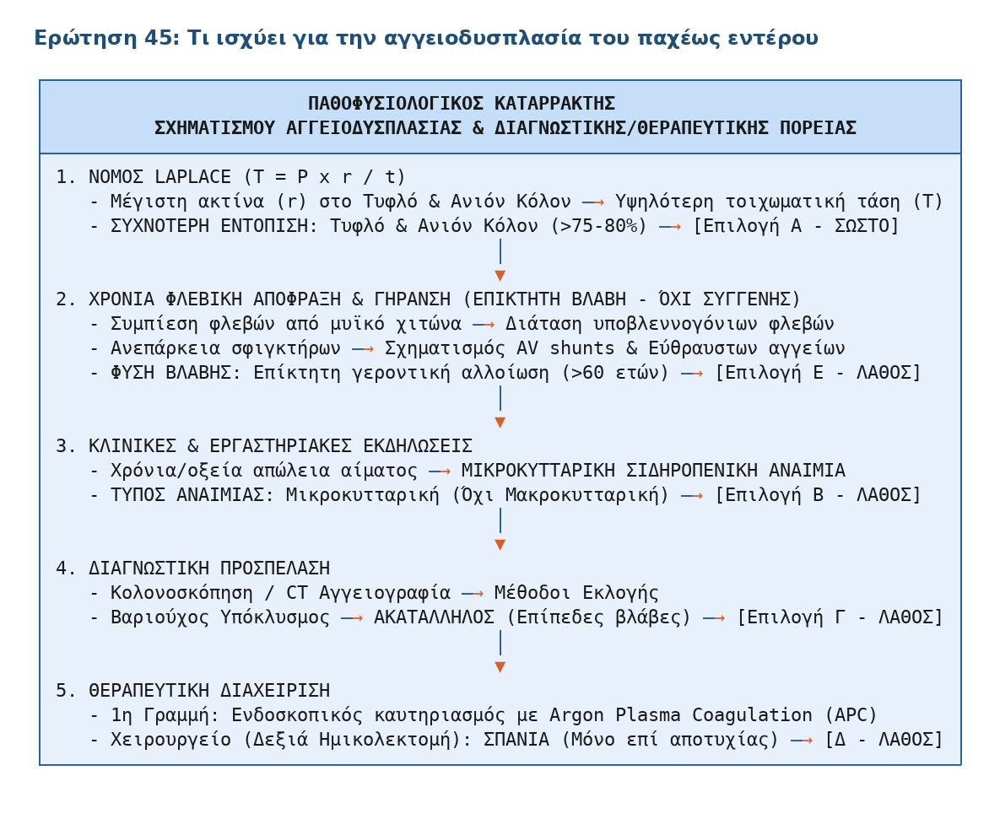
M1_Q45_DIAG_01.png
📋 ΠΙΝΑΚΑΣ / ΣΧΗΜΑ (M1_Q45_TAB_02.png)

M1_Q45_TAB_02.png
📋 ΠΙΝΑΚΑΣ / ΣΧΗΜΑ (M1_Q45_TAB_03.png)
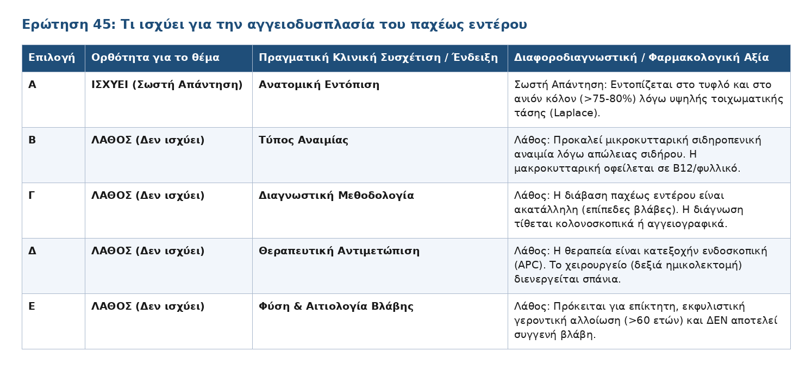
M1_Q45_TAB_03.png
Θέμα 46 (Seq 2)
Σύνολο πινάκων & εικόνων: 5
Τι ισχύει για τις ιογενείς ηπατίτιδες
📷 ΕΙΚΟΝΑ ⚠️ (Δεν βρέθηκε) (M1_Q46_NB.png)

M1_Q46_NB.png
📋 ΠΙΝΑΚΑΣ / ΣΧΗΜΑ (M1_Q46_TAB_01.png)

M1_Q46_TAB_01.png
📊 ΔΙΑΓΡΑΜΜΑ (M1_Q46_DIAG_01.png)

M1_Q46_DIAG_01.png
📋 ΠΙΝΑΚΑΣ / ΣΧΗΜΑ (M1_Q46_TAB_02.png)
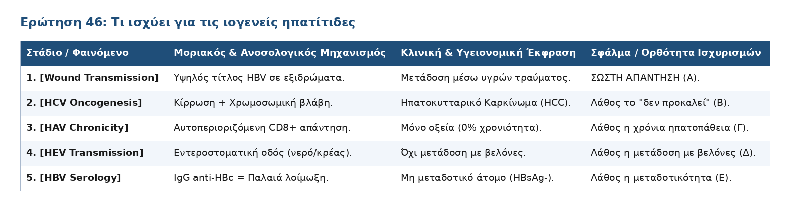
M1_Q46_TAB_02.png
📋 ΠΙΝΑΚΑΣ / ΣΧΗΜΑ (M1_Q46_TAB_03.png)

M1_Q46_TAB_03.png
Θέμα 47 (Seq 3)
Σύνολο πινάκων & εικόνων: 5
Άμεσες επιπλοκές της οξείας ιογενούς ηπατίτιδας είναι όλες οι παρακάτω εκτός από μία
📷 ΕΙΚΟΝΑ ⚠️ (Δεν βρέθηκε) (M1_Q47_NB.png)

M1_Q47_NB.png
📋 ΠΙΝΑΚΑΣ / ΣΧΗΜΑ (M1_Q47_TAB_01.png)

M1_Q47_TAB_01.png
📊 ΔΙΑΓΡΑΜΜΑ (M1_Q47_DIAG_01.png)

M1_Q47_DIAG_01.png
📋 ΠΙΝΑΚΑΣ / ΣΧΗΜΑ (M1_Q47_TAB_02.png)
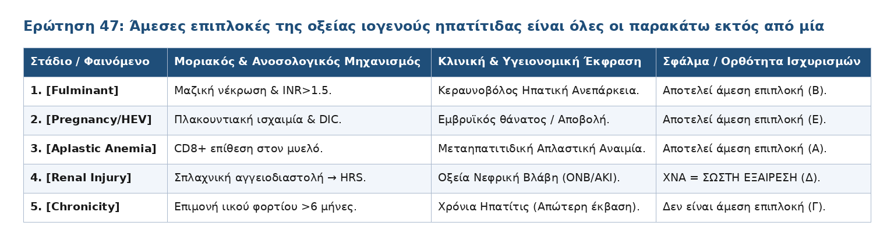
M1_Q47_TAB_02.png
📋 ΠΙΝΑΚΑΣ / ΣΧΗΜΑ (M1_Q47_TAB_03.png)
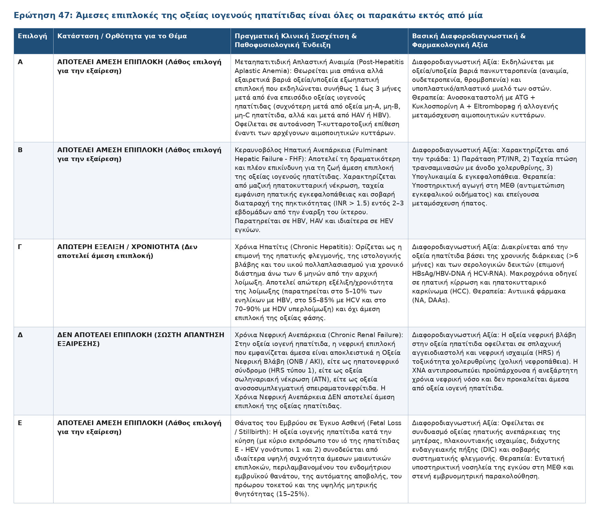
M1_Q47_TAB_03.png
Θέμα 48 (Seq 4)
Σύνολο πινάκων & εικόνων: 5
Τι δεν ισχύει για την κίρρωση του ήπατος
📷 ΕΙΚΟΝΑ ⚠️ (Δεν βρέθηκε) (M1_Q48_NB.png)

M1_Q48_NB.png
📋 ΠΙΝΑΚΑΣ / ΣΧΗΜΑ (M1_Q48_TAB_01.png)
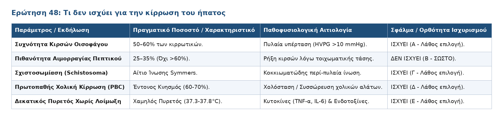
M1_Q48_TAB_01.png
📊 ΔΙΑΓΡΑΜΜΑ (M1_Q48_DIAG_01.png)
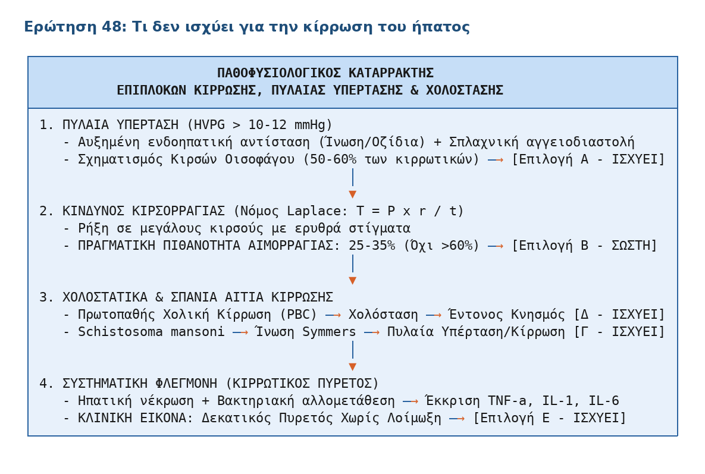
M1_Q48_DIAG_01.png
📋 ΠΙΝΑΚΑΣ / ΣΧΗΜΑ (M1_Q48_TAB_02.png)
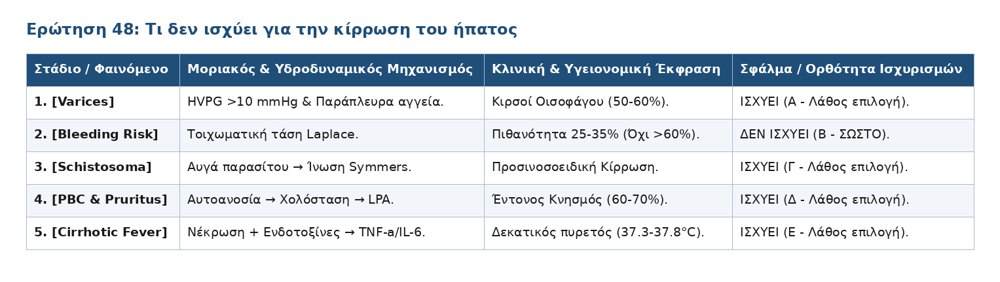
M1_Q48_TAB_02.png
📋 ΠΙΝΑΚΑΣ / ΣΧΗΜΑ (M1_Q48_TAB_03.png)

M1_Q48_TAB_03.png
Θέμα 49 (Seq 5)
Σύνολο πινάκων & εικόνων: 5
Όλα τα παρακάτω μπορούν να επιπλέκουν οξεία ηπατική ανεπάρκεια εκτός από ένα
📷 ΕΙΚΟΝΑ ⚠️ (Δεν βρέθηκε) (M1_Q49_NB.png)

M1_Q49_NB.png
📋 ΠΙΝΑΚΑΣ / ΣΧΗΜΑ (M1_Q49_TAB_01.png)
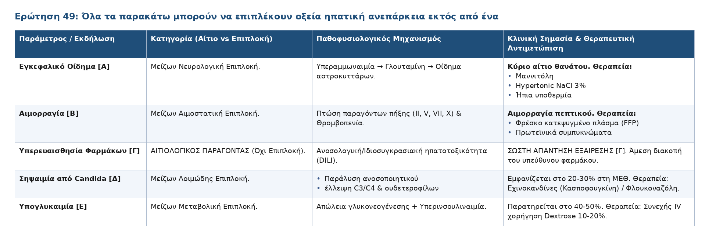
M1_Q49_TAB_01.png
📊 ΔΙΑΓΡΑΜΜΑ (M1_Q49_DIAG_01.png)
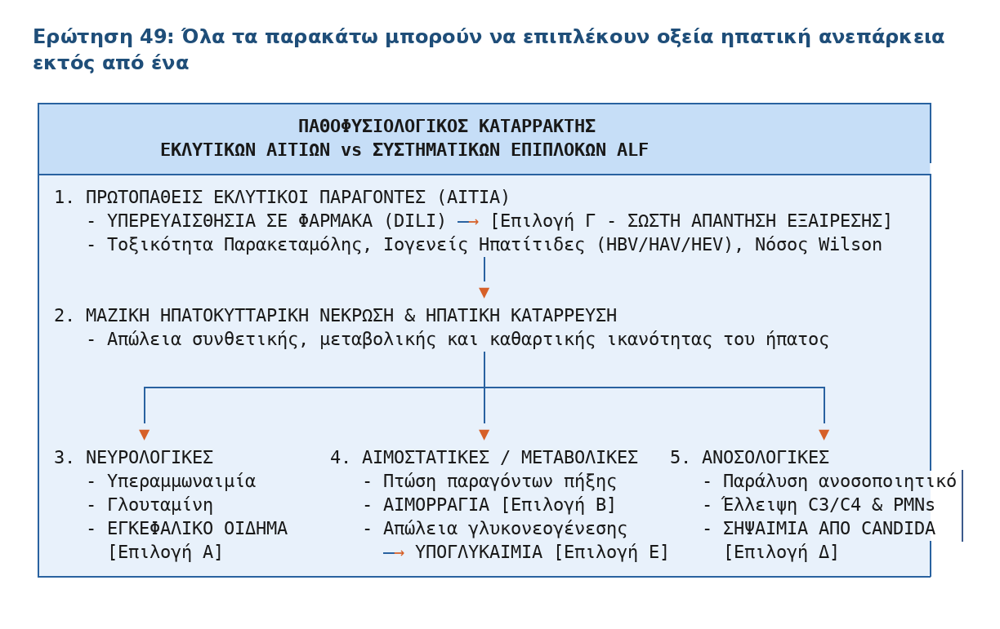
M1_Q49_DIAG_01.png
📋 ΠΙΝΑΚΑΣ / ΣΧΗΜΑ (M1_Q49_TAB_02.png)

M1_Q49_TAB_02.png
📋 ΠΙΝΑΚΑΣ / ΣΧΗΜΑ (M1_Q49_TAB_03.png)
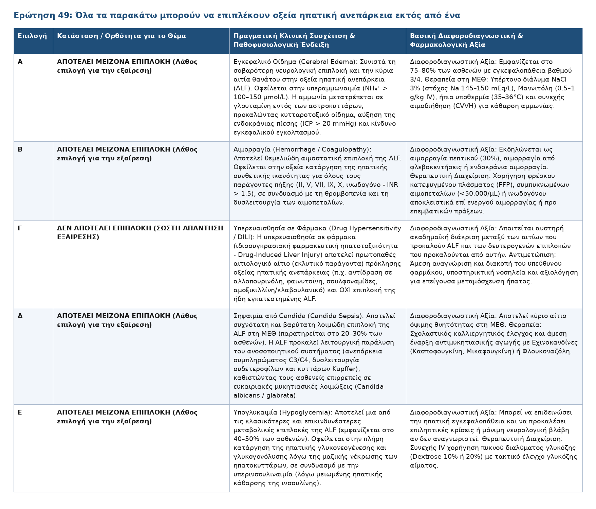
M1_Q49_TAB_03.png
Θέμα 50 (Seq 6)
Σύνολο πινάκων & εικόνων: 5
Τι ισχύει για ασθενείς με οξεία νεφρική ανεπάρκεια
📷 ΕΙΚΟΝΑ ⚠️ (Δεν βρέθηκε) (M1_Q50_NB.png)

M1_Q50_NB.png
📋 ΠΙΝΑΚΑΣ / ΣΧΗΜΑ (M1_Q50_TAB_01.png)
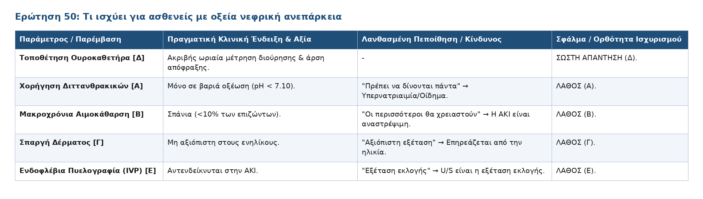
M1_Q50_TAB_01.png
📊 ΔΙΑΓΡΑΜΜΑ (M1_Q50_DIAG_01.png)
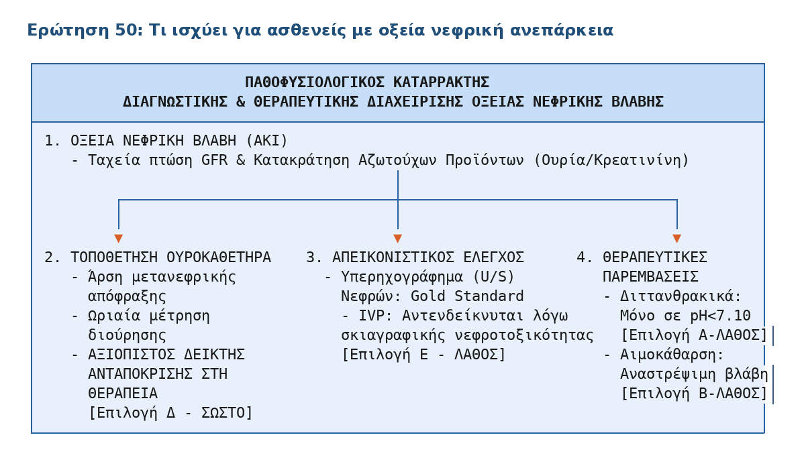
M1_Q50_DIAG_01.png
📋 ΠΙΝΑΚΑΣ / ΣΧΗΜΑ (M1_Q50_TAB_02.png)

M1_Q50_TAB_02.png
📋 ΠΙΝΑΚΑΣ / ΣΧΗΜΑ (M1_Q50_TAB_03.png)

M1_Q50_TAB_03.png
Θέμα 51 (Seq 7)
Σύνολο πινάκων & εικόνων: 5
Από τα παρακάτω ισχύουν όλα εκτός από ένα
📷 ΕΙΚΟΝΑ ⚠️ (Δεν βρέθηκε) (M1_Q51_NB.png)

M1_Q51_NB.png
📋 ΠΙΝΑΚΑΣ / ΣΧΗΜΑ (M1_Q51_TAB_01.png)

M1_Q51_TAB_01.png
📊 ΔΙΑΓΡΑΜΜΑ (M1_Q51_DIAG_01.png)
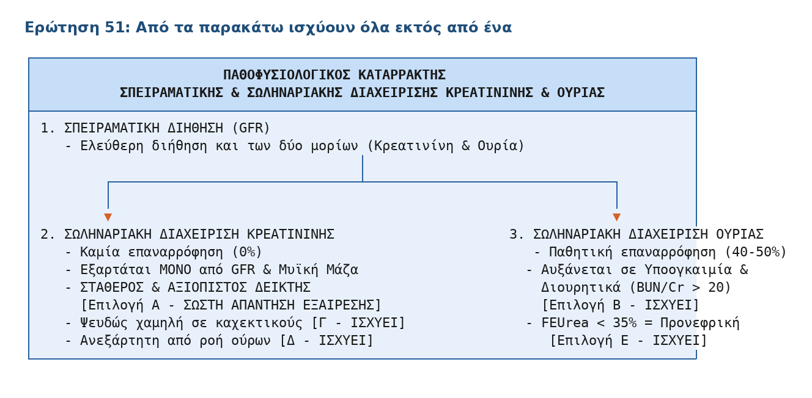
M1_Q51_DIAG_01.png
📋 ΠΙΝΑΚΑΣ / ΣΧΗΜΑ (M1_Q51_TAB_02.png)
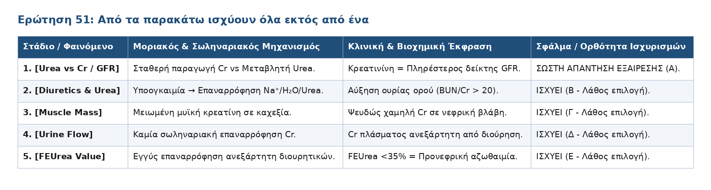
M1_Q51_TAB_02.png
📋 ΠΙΝΑΚΑΣ / ΣΧΗΜΑ (M1_Q51_TAB_03.png)

M1_Q51_TAB_03.png
Θέμα 52 (Seq 8)
Σύνολο πινάκων & εικόνων: 5
Τι από τα παρακάτω δεν αποτελεί αιτία χρόνιας νεφρικής ανεπάρκειας
📷 ΕΙΚΟΝΑ ⚠️ (Δεν βρέθηκε) (M1_Q52_NB.png)

M1_Q52_NB.png
📋 ΠΙΝΑΚΑΣ / ΣΧΗΜΑ (M1_Q52_TAB_01.png)
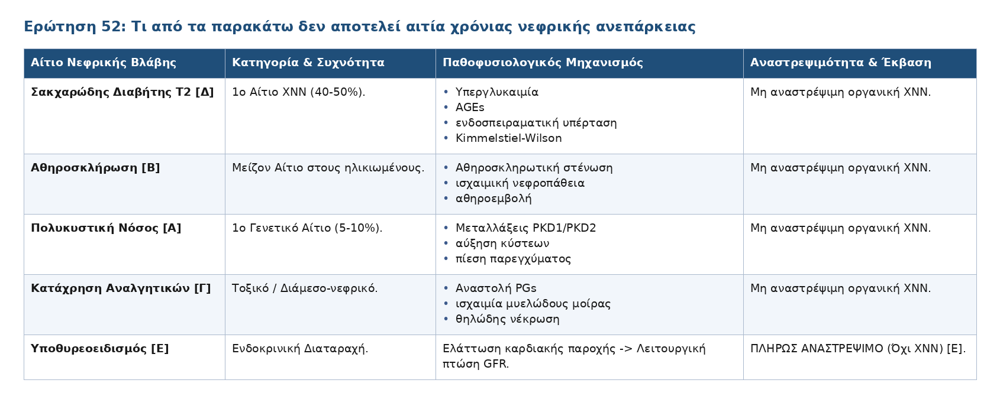
M1_Q52_TAB_01.png
📊 ΔΙΑΓΡΑΜΜΑ (M1_Q52_DIAG_01.png)
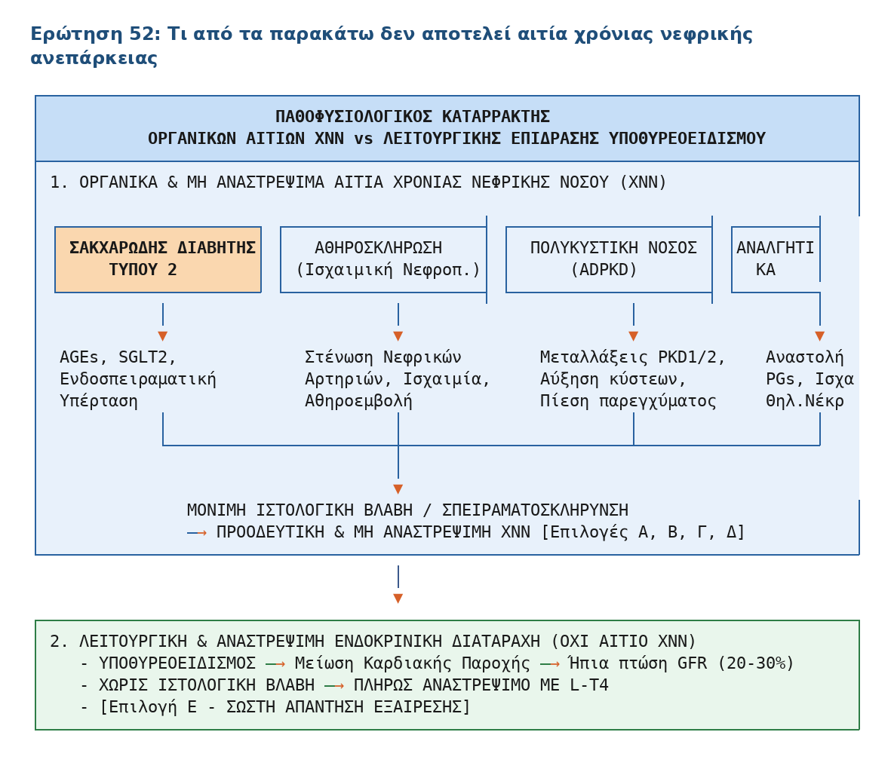
M1_Q52_DIAG_01.png
📋 ΠΙΝΑΚΑΣ / ΣΧΗΜΑ (M1_Q52_TAB_02.png)
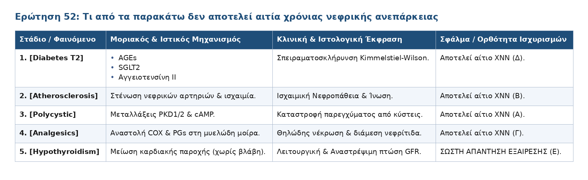
M1_Q52_TAB_02.png
📋 ΠΙΝΑΚΑΣ / ΣΧΗΜΑ (M1_Q52_TAB_03.png)
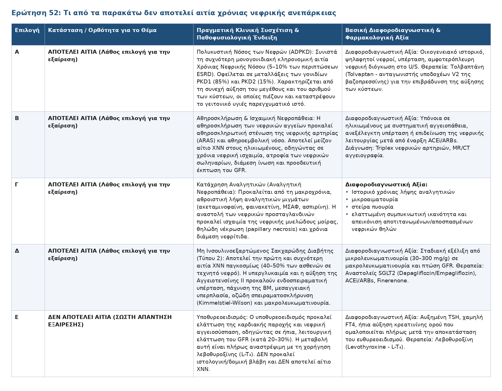
M1_Q52_TAB_03.png
Θέμα 53 (Seq 9)
Σύνολο πινάκων & εικόνων: 5
Τι ισχύει για την βαριά μυασθένεια
📷 ΕΙΚΟΝΑ ⚠️ (Δεν βρέθηκε) (M1_Q53_NB.png)

M1_Q53_NB.png
📋 ΠΙΝΑΚΑΣ / ΣΧΗΜΑ (M1_Q53_TAB_01.png)

M1_Q53_TAB_01.png
📊 ΔΙΑΓΡΑΜΜΑ (M1_Q53_DIAG_01.png)

M1_Q53_DIAG_01.png
📋 ΠΙΝΑΚΑΣ / ΣΧΗΜΑ (M1_Q53_TAB_02.png)
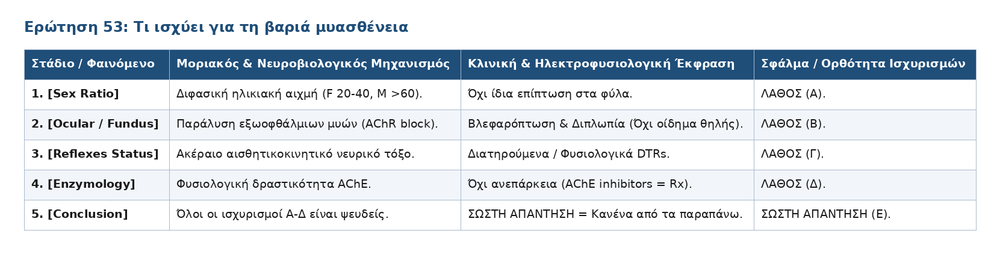
M1_Q53_TAB_02.png
📋 ΠΙΝΑΚΑΣ / ΣΧΗΜΑ (M1_Q53_TAB_03.png)

M1_Q53_TAB_03.png
Θέμα 54 (Seq 10)
Σύνολο πινάκων & εικόνων: 5
Ποιο από τα παρακάτω αποτελεί αιτία μηνιγγίτιδας όταν στο ΕΝΥ επικρατούν τα λεμφοκύτταρα
📷 ΕΙΚΟΝΑ ⚠️ (Δεν βρέθηκε) (M1_Q54_NB.png)

M1_Q54_NB.png
📋 ΠΙΝΑΚΑΣ / ΣΧΗΜΑ (M1_Q54_TAB_01.png)
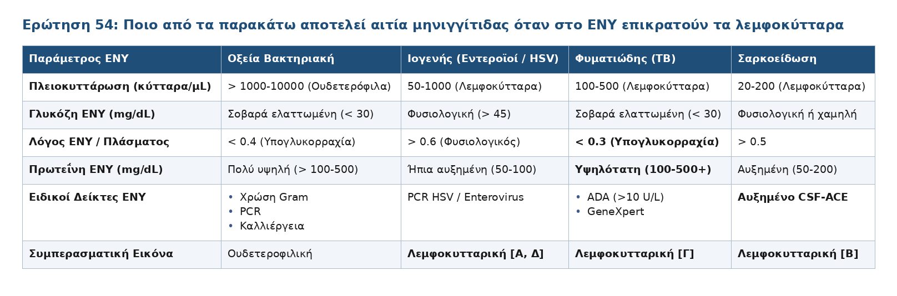
M1_Q54_TAB_01.png
📊 ΔΙΑΓΡΑΜΜΑ (M1_Q54_DIAG_01.png)
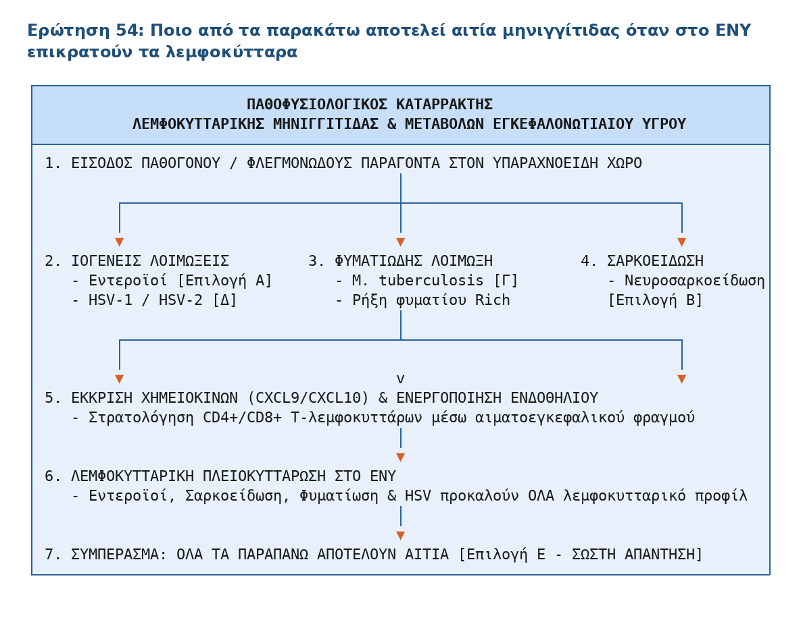
M1_Q54_DIAG_01.png
📋 ΠΙΝΑΚΑΣ / ΣΧΗΜΑ (M1_Q54_TAB_02.png)

M1_Q54_TAB_02.png
📋 ΠΙΝΑΚΑΣ / ΣΧΗΜΑ (M1_Q54_TAB_03.png)
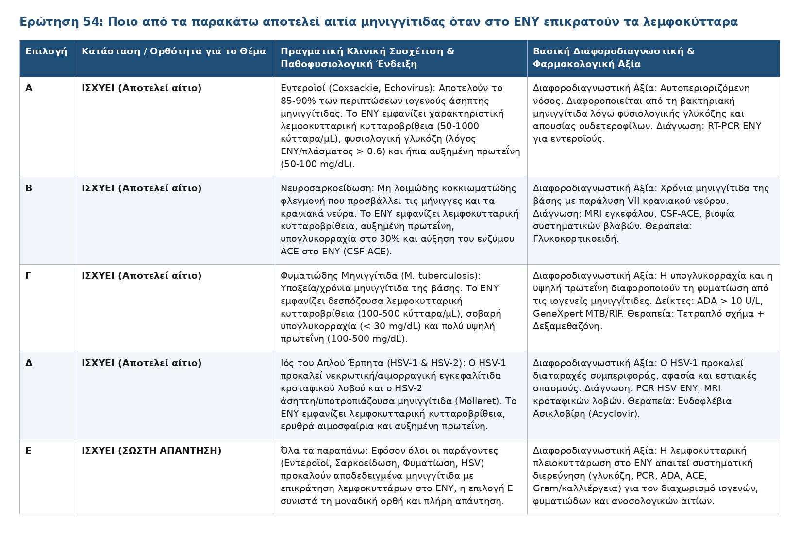
M1_Q54_TAB_03.png
Θέμα 55 (Seq 11)
Σύνολο πινάκων & εικόνων: 5
Τι ισχύει σχετικά με την οσφυονωτιαία παρακέντηση
📷 ΕΙΚΟΝΑ ⚠️ (Δεν βρέθηκε) (M1_Q55_NB.png)

M1_Q55_NB.png
📋 ΠΙΝΑΚΑΣ / ΣΧΗΜΑ (M1_Q55_TAB_01.png)

M1_Q55_TAB_01.png
📊 ΔΙΑΓΡΑΜΜΑ (M1_Q55_DIAG_01.png)
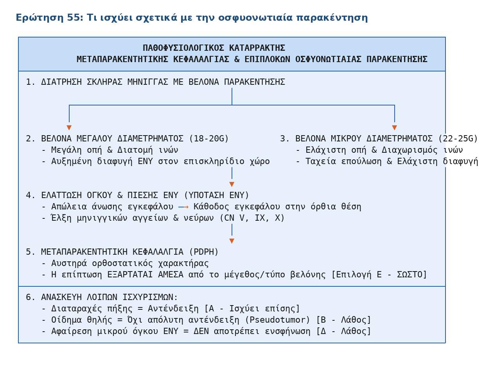
M1_Q55_DIAG_01.png
📋 ΠΙΝΑΚΑΣ / ΣΧΗΜΑ (M1_Q55_TAB_02.png)
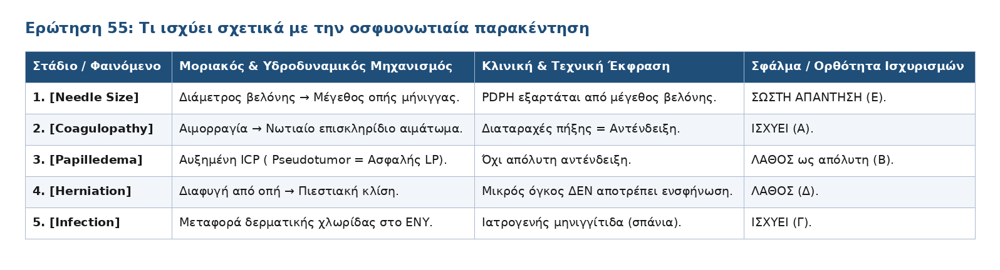
M1_Q55_TAB_02.png
📋 ΠΙΝΑΚΑΣ / ΣΧΗΜΑ (M1_Q55_TAB_03.png)

M1_Q55_TAB_03.png
Θέμα 56 (Seq 12)
Σύνολο πινάκων & εικόνων: 5
Τι δεν συσχετίζεται συνήθως με την έκβαση της βακτηριακής μηνιγγίτιδας
📷 ΕΙΚΟΝΑ ⚠️ (Δεν βρέθηκε) (M1_Q56_NB.png)

M1_Q56_NB.png
📋 ΠΙΝΑΚΑΣ / ΣΧΗΜΑ (M1_Q56_TAB_01.png)

M1_Q56_TAB_01.png
📊 ΔΙΑΓΡΑΜΜΑ (M1_Q56_DIAG_01.png)
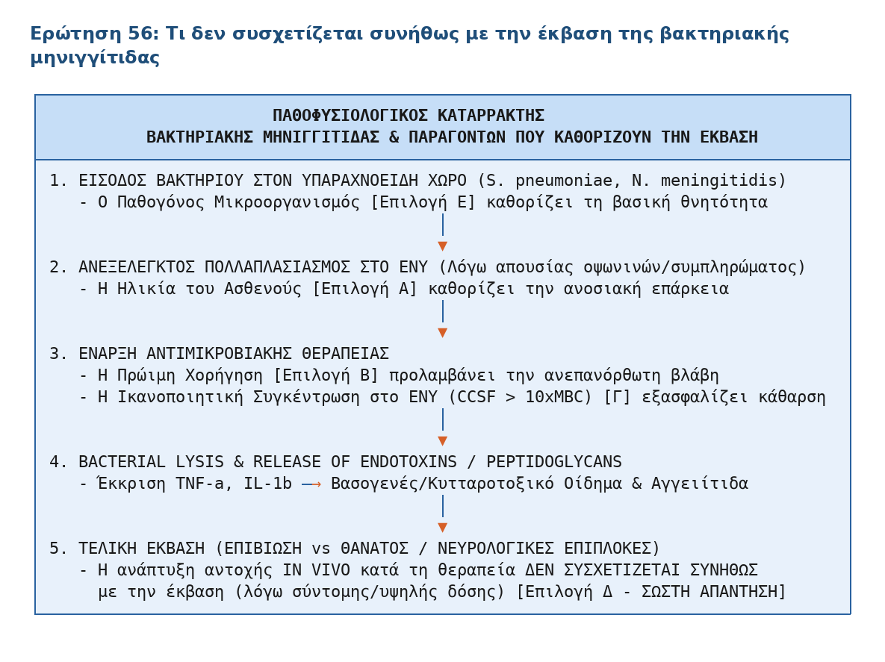
M1_Q56_DIAG_01.png
📋 ΠΙΝΑΚΑΣ / ΣΧΗΜΑ (M1_Q56_TAB_02.png)
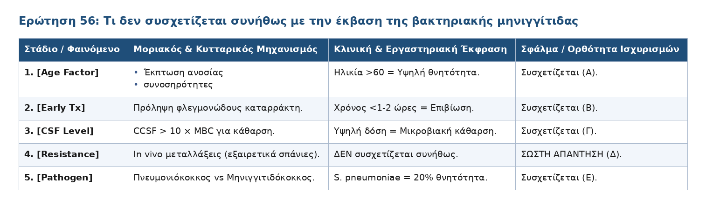
M1_Q56_TAB_02.png
📋 ΠΙΝΑΚΑΣ / ΣΧΗΜΑ (M1_Q56_TAB_03.png)
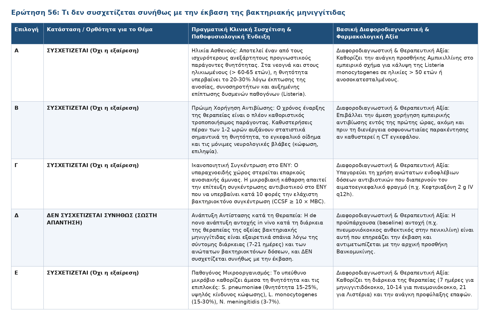
M1_Q56_TAB_03.png
Θέμα 57 (Seq 13)
Σύνολο πινάκων & εικόνων: 5
Τι ισχύει για τη διαβητική αμφιβληστροειδοπάθεια
📷 ΕΙΚΟΝΑ ⚠️ (Δεν βρέθηκε) (M1_Q57_NB.png)

M1_Q57_NB.png
📋 ΠΙΝΑΚΑΣ / ΣΧΗΜΑ (M1_Q57_TAB_01.png)

M1_Q57_TAB_01.png
📊 ΔΙΑΓΡΑΜΜΑ (M1_Q57_DIAG_01.png)

M1_Q57_DIAG_01.png
📋 ΠΙΝΑΚΑΣ / ΣΧΗΜΑ (M1_Q57_TAB_02.png)

M1_Q57_TAB_02.png
📋 ΠΙΝΑΚΑΣ / ΣΧΗΜΑ (M1_Q57_TAB_03.png)

M1_Q57_TAB_03.png
Θέμα 58 (Seq 14)
Σύνολο πινάκων & εικόνων: 5
Τι δεν ισχύει για την εντατική θεραπεία με ινσουλίνη στο διαβήτη τύπου 1
📷 ΕΙΚΟΝΑ ⚠️ (Δεν βρέθηκε) (M1_Q58_NB.png)

M1_Q58_NB.png
📋 ΠΙΝΑΚΑΣ / ΣΧΗΜΑ (M1_Q58_TAB_01.png)

M1_Q58_TAB_01.png
📊 ΔΙΑΓΡΑΜΜΑ (M1_Q58_DIAG_01.png)
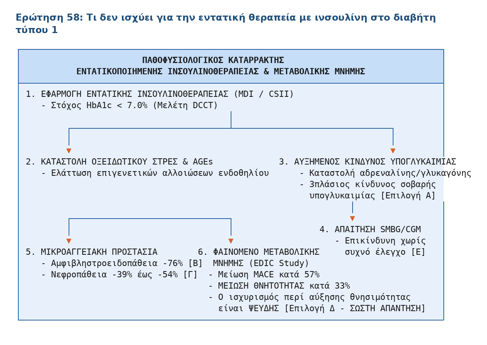
M1_Q58_DIAG_01.png
📋 ΠΙΝΑΚΑΣ / ΣΧΗΜΑ (M1_Q58_TAB_02.png)
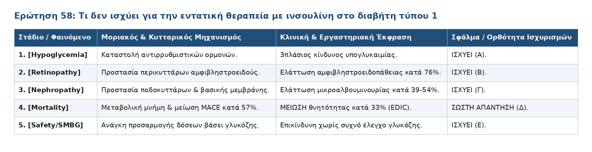
M1_Q58_TAB_02.png
📋 ΠΙΝΑΚΑΣ / ΣΧΗΜΑ (M1_Q58_TAB_03.png)

M1_Q58_TAB_03.png
Θέμα 59 (Seq 15)
Σύνολο πινάκων & εικόνων: 5
Τι δεν ισχύει για τις δοκιμασίες της θυρεοειδικής λειτουργίας
📷 ΕΙΚΟΝΑ ⚠️ (Δεν βρέθηκε) (M1_Q59_NB.png)

M1_Q59_NB.png
📋 ΠΙΝΑΚΑΣ / ΣΧΗΜΑ (M1_Q59_TAB_01.png)
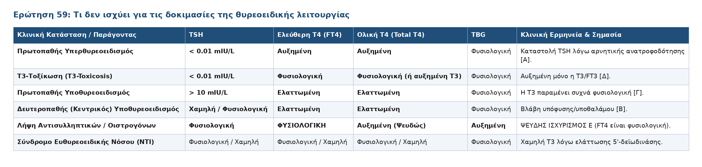
M1_Q59_TAB_01.png
📊 ΔΙΑΓΡΑΜΜΑ (M1_Q59_DIAG_01.png)

M1_Q59_DIAG_01.png
📋 ΠΙΝΑΚΑΣ / ΣΧΗΜΑ (M1_Q59_TAB_02.png)
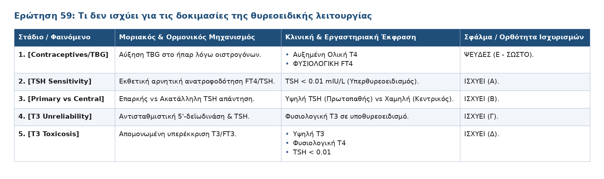
M1_Q59_TAB_02.png
📋 ΠΙΝΑΚΑΣ / ΣΧΗΜΑ (M1_Q59_TAB_03.png)
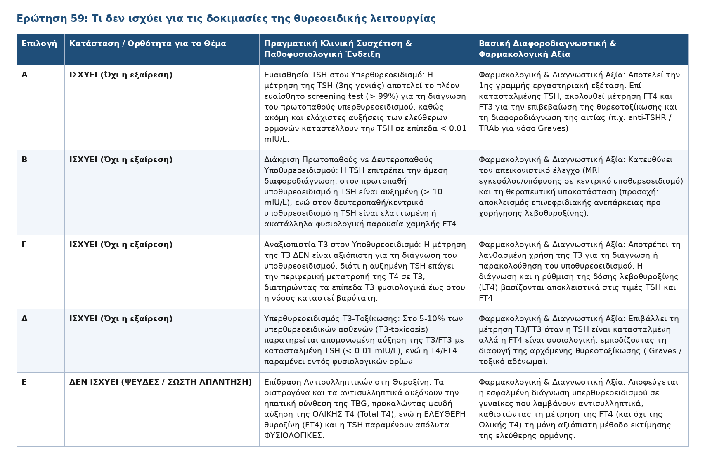
M1_Q59_TAB_03.png
Θέμα 60 (Seq 16)
Σύνολο πινάκων & εικόνων: 5
Τι δεν ισχύει σχετικά με τους όγκους της υπόφυσης
📷 ΕΙΚΟΝΑ ⚠️ (Δεν βρέθηκε) (M1_Q60_NB.png)

M1_Q60_NB.png
📋 ΠΙΝΑΚΑΣ / ΣΧΗΜΑ (M1_Q60_TAB_01.png)
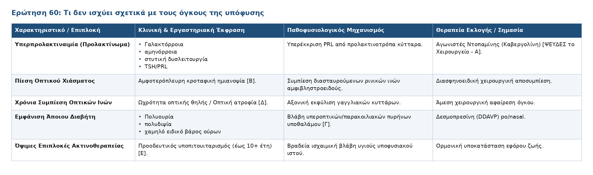
M1_Q60_TAB_01.png
📊 ΔΙΑΓΡΑΜΜΑ (M1_Q60_DIAG_01.png)
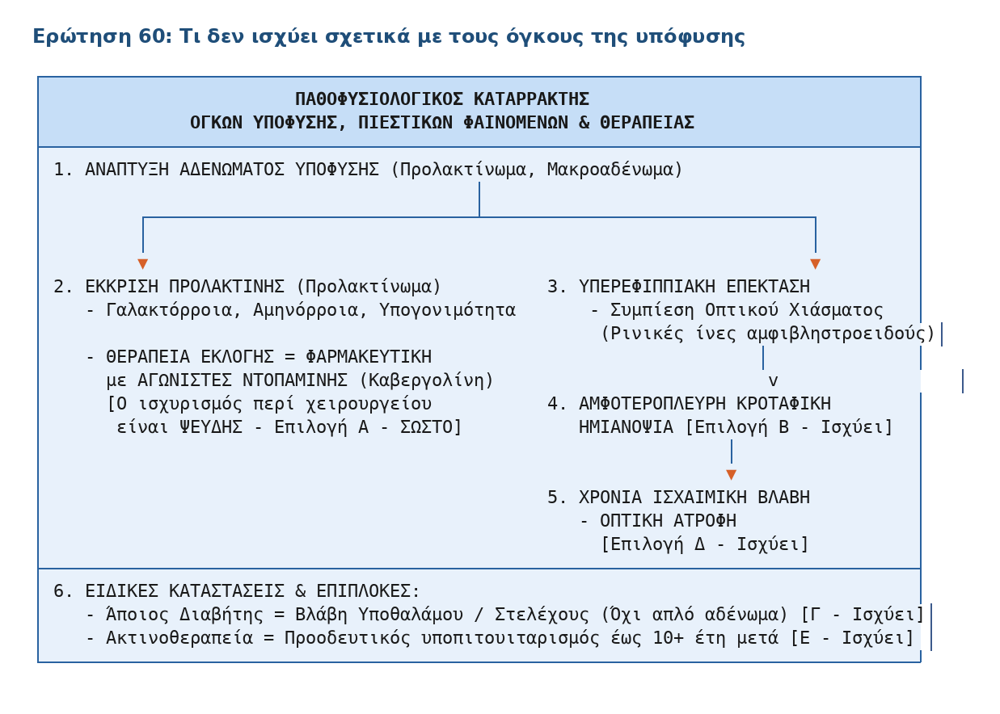
M1_Q60_DIAG_01.png
📋 ΠΙΝΑΚΑΣ / ΣΧΗΜΑ (M1_Q60_TAB_02.png)

M1_Q60_TAB_02.png
📋 ΠΙΝΑΚΑΣ / ΣΧΗΜΑ (M1_Q60_TAB_03.png)
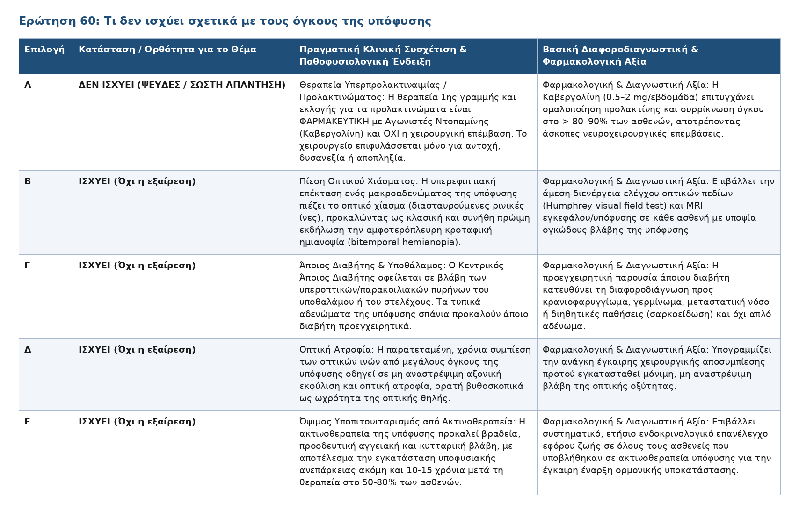
M1_Q60_TAB_03.png
Θέμα 61 (Seq 17)
Σύνολο πινάκων & εικόνων: 5
Τι δεν ισχύει για την μεγαλακρία
📷 ΕΙΚΟΝΑ ⚠️ (Δεν βρέθηκε) (M1_Q61_NB.png)

M1_Q61_NB.png
📋 ΠΙΝΑΚΑΣ / ΣΧΗΜΑ (M1_Q61_TAB_01.png)

M1_Q61_TAB_01.png
📊 ΔΙΑΓΡΑΜΜΑ (M1_Q61_DIAG_01.png)

M1_Q61_DIAG_01.png
📋 ΠΙΝΑΚΑΣ / ΣΧΗΜΑ (M1_Q61_TAB_02.png)

M1_Q61_TAB_02.png
📋 ΠΙΝΑΚΑΣ / ΣΧΗΜΑ (M1_Q61_TAB_03.png)
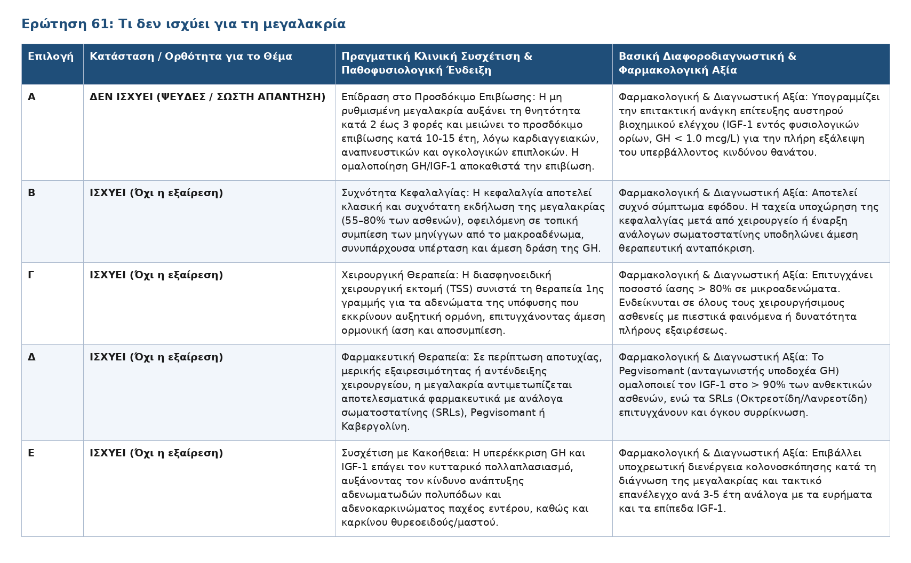
M1_Q61_TAB_03.png
Θέμα 62 (Seq 18)
Σύνολο πινάκων & εικόνων: 5
Τι ισχύει για τη δυσλιποπρωτεϊναιμία
📷 ΕΙΚΟΝΑ ⚠️ (Δεν βρέθηκε) (M1_Q62_NB.png)

M1_Q62_NB.png
📋 ΠΙΝΑΚΑΣ / ΣΧΗΜΑ (M1_Q62_TAB_01.png)

M1_Q62_TAB_01.png
📊 ΔΙΑΓΡΑΜΜΑ (M1_Q62_DIAG_01.png)
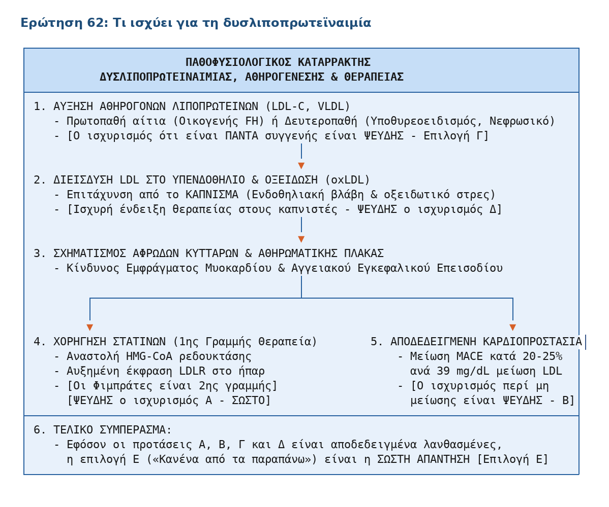
M1_Q62_DIAG_01.png
📋 ΠΙΝΑΚΑΣ / ΣΧΗΜΑ (M1_Q62_TAB_02.png)
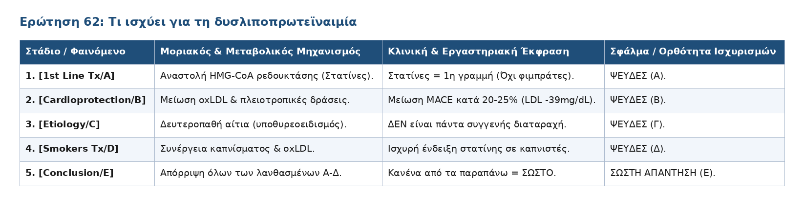
M1_Q62_TAB_02.png
📋 ΠΙΝΑΚΑΣ / ΣΧΗΜΑ (M1_Q62_TAB_03.png)
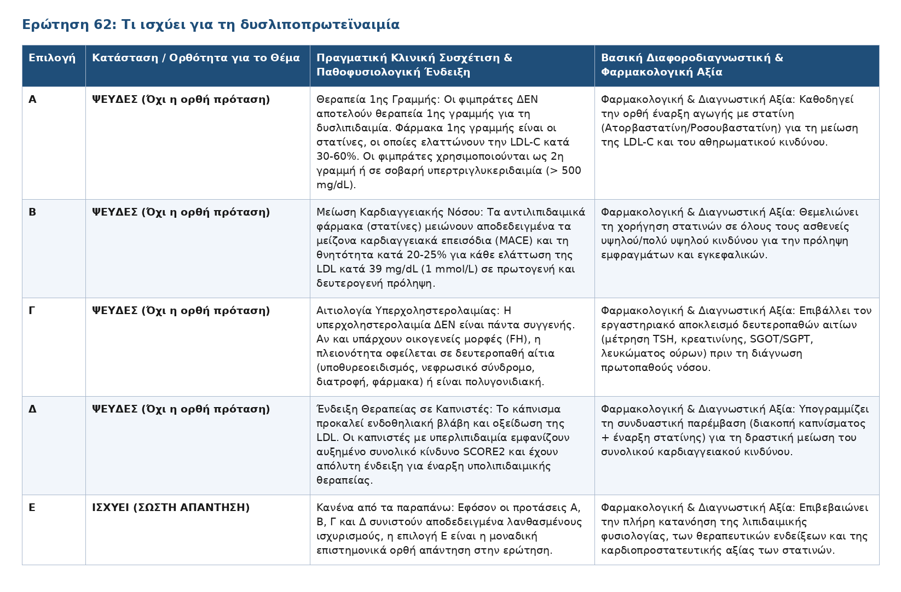
M1_Q62_TAB_03.png
Θέμα 63 (Seq 19)
Σύνολο πινάκων & εικόνων: 5
Ποιο από τα παρακάτω αντιφυματικά φάρμακα προκαλεί οπτική νευρίτιδα;
📷 ΕΙΚΟΝΑ ⚠️ (Δεν βρέθηκε) (M1_Q63_NB.png)

M1_Q63_NB.png
📋 ΠΙΝΑΚΑΣ / ΣΧΗΜΑ (M1_Q63_TAB_01.png)

M1_Q63_TAB_01.png
📊 ΔΙΑΓΡΑΜΜΑ (M1_Q63_DIAG_01.png)
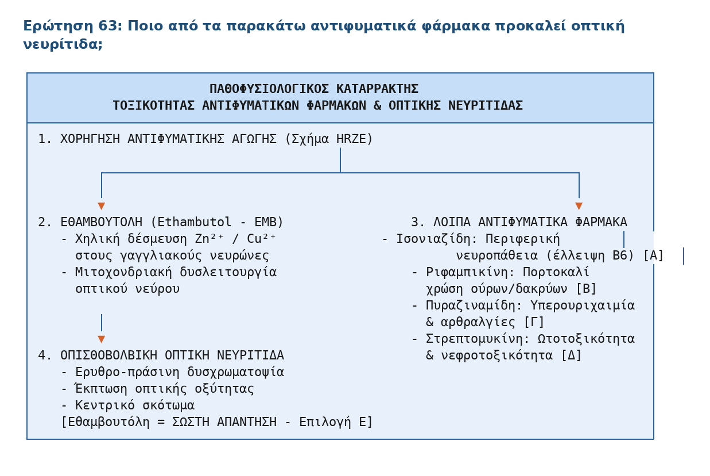
M1_Q63_DIAG_01.png
📋 ΠΙΝΑΚΑΣ / ΣΧΗΜΑ (M1_Q63_TAB_02.png)

M1_Q63_TAB_02.png
📋 ΠΙΝΑΚΑΣ / ΣΧΗΜΑ (M1_Q63_TAB_03.png)
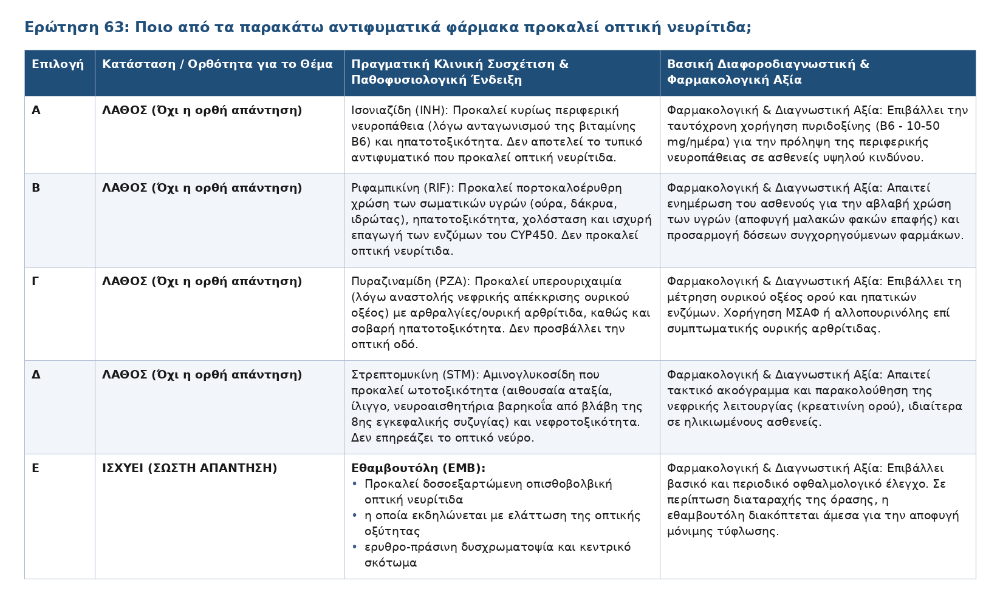
M1_Q63_TAB_03.png
Θέμα 64 (Seq 20)
Σύνολο πινάκων & εικόνων: 5
Οι στεροειδείς ορμόνες συντίθενται
📷 ΕΙΚΟΝΑ ⚠️ (Δεν βρέθηκε) (M1_Q64_NB.png)

M1_Q64_NB.png
📋 ΠΙΝΑΚΑΣ / ΣΧΗΜΑ (M1_Q64_TAB_01.png)

M1_Q64_TAB_01.png
📊 ΔΙΑΓΡΑΜΜΑ (M1_Q64_DIAG_01.png)

M1_Q64_DIAG_01.png
📋 ΠΙΝΑΚΑΣ / ΣΧΗΜΑ (M1_Q64_TAB_02.png)

M1_Q64_TAB_02.png
📋 ΠΙΝΑΚΑΣ / ΣΧΗΜΑ (M1_Q64_TAB_03.png)
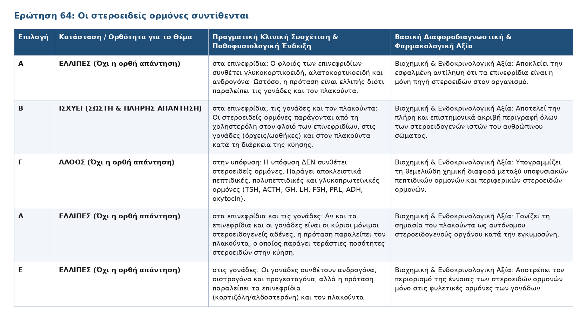
M1_Q64_TAB_03.png
Θέμα 65 (Seq 21)
Σύνολο πινάκων & εικόνων: 5
Το ένζυμο 1α-υδροξυλάση στο νεφρικό παρέγχυμα παίζει σημαντικό ρόλο
📷 ΕΙΚΟΝΑ ⚠️ (Δεν βρέθηκε) (M1_Q65_NB.png)

M1_Q65_NB.png
📋 ΠΙΝΑΚΑΣ / ΣΧΗΜΑ (M1_Q65_TAB_01.png)
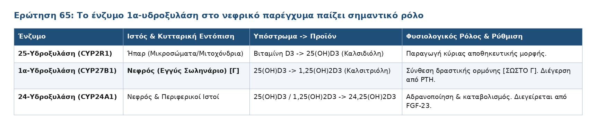
M1_Q65_TAB_01.png
📊 ΔΙΑΓΡΑΜΜΑ (M1_Q65_DIAG_01.png)
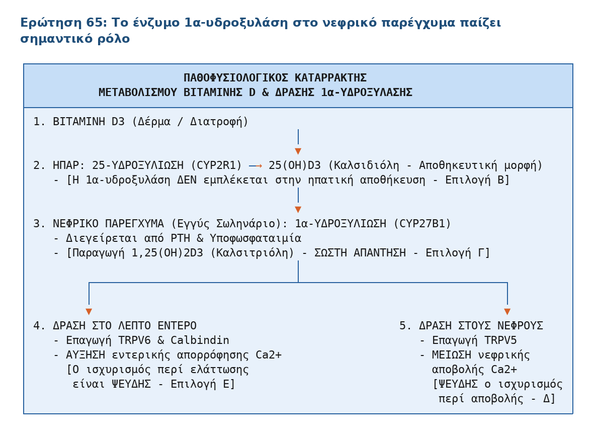
M1_Q65_DIAG_01.png
📋 ΠΙΝΑΚΑΣ / ΣΧΗΜΑ (M1_Q65_TAB_02.png)
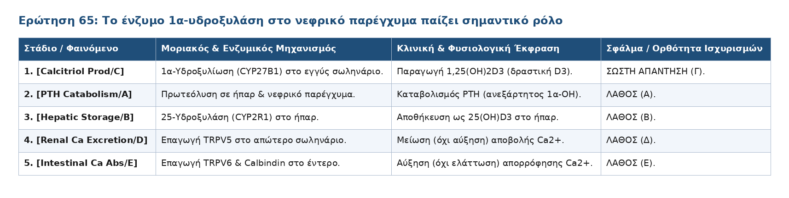
M1_Q65_TAB_02.png
📋 ΠΙΝΑΚΑΣ / ΣΧΗΜΑ (M1_Q65_TAB_03.png)
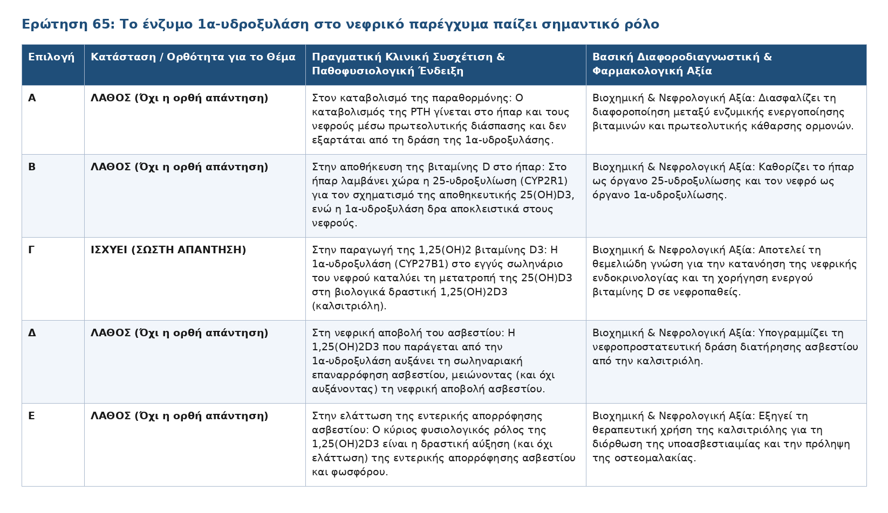
M1_Q65_TAB_03.png
Θέμα 66 (Seq 22)
Σύνολο πινάκων & εικόνων: 5
Το κυριότερο κλινικό χαρακτηριστικό της αυξημένης παραγωγής αυξητικής ορμόνης λόγω αδενώματος της υπόφυσης στην προεφηβική περίοδο είναι:
📷 ΕΙΚΟΝΑ ⚠️ (Δεν βρέθηκε) (M1_Q66_NB.png)

M1_Q66_NB.png
📋 ΠΙΝΑΚΑΣ / ΣΧΗΜΑ (M1_Q66_TAB_01.png)

M1_Q66_TAB_01.png
📊 ΔΙΑΓΡΑΜΜΑ (M1_Q66_DIAG_01.png)

M1_Q66_DIAG_01.png
📋 ΠΙΝΑΚΑΣ / ΣΧΗΜΑ (M1_Q66_TAB_02.png)

M1_Q66_TAB_02.png
📋 ΠΙΝΑΚΑΣ / ΣΧΗΜΑ (M1_Q66_TAB_03.png)

M1_Q66_TAB_03.png
Θέμα 67 (Seq 23)
Σύνολο πινάκων & εικόνων: 5
Στα παιδιά και τους εφήβους ο υποθυρεοειδισμός προκαλεί:
📷 ΕΙΚΟΝΑ ⚠️ (Δεν βρέθηκε) (M1_Q67_NB.png)

M1_Q67_NB.png
📋 ΠΙΝΑΚΑΣ / ΣΧΗΜΑ (M1_Q67_TAB_01.png)

M1_Q67_TAB_01.png
📊 ΔΙΑΓΡΑΜΜΑ (M1_Q67_DIAG_01.png)
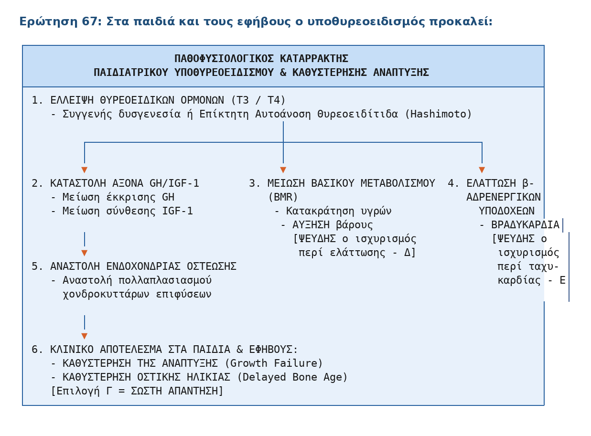
M1_Q67_DIAG_01.png
📋 ΠΙΝΑΚΑΣ / ΣΧΗΜΑ (M1_Q67_TAB_02.png)
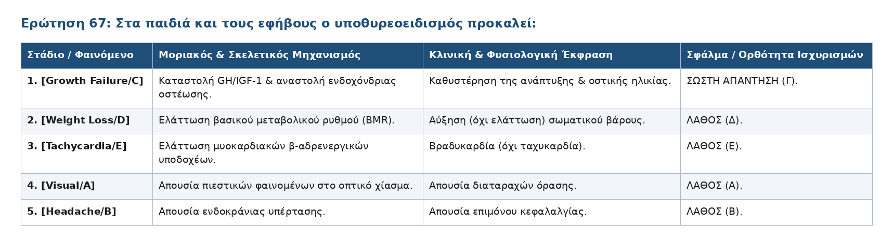
M1_Q67_TAB_02.png
📋 ΠΙΝΑΚΑΣ / ΣΧΗΜΑ (M1_Q67_TAB_03.png)
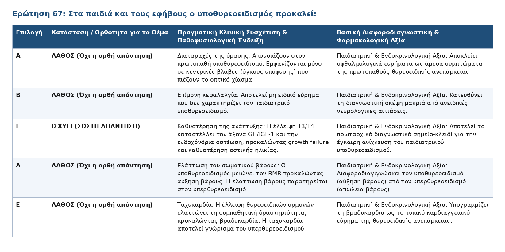
M1_Q67_TAB_03.png
Θέμα 68 (Seq 24)
Σύνολο πινάκων & εικόνων: 5
Στους άνδρες, η συχνότερη κλινική εκδήλωση του προλακτινώματος είναι:
📷 ΕΙΚΟΝΑ ⚠️ (Δεν βρέθηκε) (M1_Q68_NB.png)

M1_Q68_NB.png
📋 ΠΙΝΑΚΑΣ / ΣΧΗΜΑ (M1_Q68_TAB_01.png)
M1_Q68_TAB_01.png
📊 ΔΙΑΓΡΑΜΜΑ (M1_Q68_DIAG_01.png)

M1_Q68_DIAG_01.png
📋 ΠΙΝΑΚΑΣ / ΣΧΗΜΑ (M1_Q68_TAB_02.png)

M1_Q68_TAB_02.png
📋 ΠΙΝΑΚΑΣ / ΣΧΗΜΑ (M1_Q68_TAB_03.png)
M1_Q68_TAB_03.png
Θέμα 69 (Seq 25)
Σύνολο πινάκων & εικόνων: 5
Έφηβος ηλικίας 15 ετών υποβάλλεται σε διαμετωπιαία εξαίρεση κρανιο-φαρυγγιώματος. Την επόμενη της επέμβασης η γενική του κατάσταση είναι πολύ καλή αλλά παρουσιάζει συχνουρία-πολυουρία και δίψα που τον οδηγεί σε αυξημένη πρόσληψη υγρών. Ποια θεωρείτε ως πιθανότερη διάγνωση;
📷 ΕΙΚΟΝΑ ⚠️ (Δεν βρέθηκε) (M1_Q69_NB.png)

M1_Q69_NB.png
📋 ΠΙΝΑΚΑΣ / ΣΧΗΜΑ (M1_Q69_TAB_01.png)

M1_Q69_TAB_01.png
📊 ΔΙΑΓΡΑΜΜΑ (M1_Q69_DIAG_01.png)
M1_Q69_DIAG_01.png
📋 ΠΙΝΑΚΑΣ / ΣΧΗΜΑ (M1_Q69_TAB_02.png)

M1_Q69_TAB_02.png
📋 ΠΙΝΑΚΑΣ / ΣΧΗΜΑ (M1_Q69_TAB_03.png)
M1_Q69_TAB_03.png
Θέμα 70 (Seq 26)
Σύνολο πινάκων & εικόνων: 5
Γυναίκα ηλικίας 48 ετών προσέρχεται στο εξωτερικό ιατρείο λόγω εμμηνόπαυσης. Από τον κλινικοεργαστηριακό έλεγχο, στον οποίο υποβάλλεται, διαπιστώνεται:
📷 ΕΙΚΟΝΑ ⚠️ (Δεν βρέθηκε) (M1_Q70_NB.png)

M1_Q70_NB.png
📋 ΠΙΝΑΚΑΣ / ΣΧΗΜΑ (M1_Q70_TAB_01.png)
M1_Q70_TAB_01.png
📊 ΔΙΑΓΡΑΜΜΑ (M1_Q70_DIAG_01.png)
M1_Q70_DIAG_01.png
📋 ΠΙΝΑΚΑΣ / ΣΧΗΜΑ (M1_Q70_TAB_02.png)

M1_Q70_TAB_02.png
📋 ΠΙΝΑΚΑΣ / ΣΧΗΜΑ (M1_Q70_TAB_03.png)

M1_Q70_TAB_03.png
Θέμα 71 (Seq 27)
Σύνολο πινάκων & εικόνων: 5
Απρόσφορη έκκριση αντιδιουρητικής ορμόνης μπορεί να προκληθεί από:
📷 ΕΙΚΟΝΑ ⚠️ (Δεν βρέθηκε) (M1_Q71_NB.png)

M1_Q71_NB.png
📋 ΠΙΝΑΚΑΣ / ΣΧΗΜΑ (M1_Q71_TAB_01.png)
M1_Q71_TAB_01.png
📊 ΔΙΑΓΡΑΜΜΑ (M1_Q71_DIAG_01.png)
M1_Q71_DIAG_01.png
📋 ΠΙΝΑΚΑΣ / ΣΧΗΜΑ (M1_Q71_TAB_02.png)

M1_Q71_TAB_02.png
📋 ΠΙΝΑΚΑΣ / ΣΧΗΜΑ (M1_Q71_TAB_03.png)

M1_Q71_TAB_03.png
Θέμα 72 (Seq 28)
Σύνολο πινάκων & εικόνων: 5
Αναγκαίο στοιχείο για τη σύνθεση των θυρεοειδικών ορμονών είναι:
📷 ΕΙΚΟΝΑ ⚠️ (Δεν βρέθηκε) (M1_Q72_NB.png)

M1_Q72_NB.png
📋 ΠΙΝΑΚΑΣ / ΣΧΗΜΑ (M1_Q72_TAB_01.png)

M1_Q72_TAB_01.png
📊 ΔΙΑΓΡΑΜΜΑ (M1_Q72_DIAG_01.png)

M1_Q72_DIAG_01.png
📋 ΠΙΝΑΚΑΣ / ΣΧΗΜΑ (M1_Q72_TAB_02.png)
M1_Q72_TAB_02.png
📋 ΠΙΝΑΚΑΣ / ΣΧΗΜΑ (M1_Q72_TAB_03.png)
M1_Q72_TAB_03.png
Θέμα 73 (Seq 29)
Σύνολο πινάκων & εικόνων: 5
Η συχνότερη αιτία υποθυρεοειδισμού είναι:
📷 ΕΙΚΟΝΑ ⚠️ (Δεν βρέθηκε) (M1_Q73_NB.png)

M1_Q73_NB.png
📋 ΠΙΝΑΚΑΣ / ΣΧΗΜΑ (M1_Q73_TAB_01.png)
M1_Q73_TAB_01.png
📊 ΔΙΑΓΡΑΜΜΑ (M1_Q73_DIAG_01.png)

M1_Q73_DIAG_01.png
📋 ΠΙΝΑΚΑΣ / ΣΧΗΜΑ (M1_Q73_TAB_02.png)
M1_Q73_TAB_02.png
📋 ΠΙΝΑΚΑΣ / ΣΧΗΜΑ (M1_Q73_TAB_03.png)

M1_Q73_TAB_03.png
Θέμα 74 (Seq 30)
Σύνολο πινάκων & εικόνων: 5
Το σύνδρομο πολλαπλής ενδοκρινικής νεοπλασίας τύπου 1 χαρακτηρίζεται από:
📷 ΕΙΚΟΝΑ ⚠️ (Δεν βρέθηκε) (M1_Q74_NB.png)

M1_Q74_NB.png
📋 ΠΙΝΑΚΑΣ / ΣΧΗΜΑ (M1_Q74_TAB_01.png)

M1_Q74_TAB_01.png
📊 ΔΙΑΓΡΑΜΜΑ (M1_Q74_DIAG_01.png)

M1_Q74_DIAG_01.png
📋 ΠΙΝΑΚΑΣ / ΣΧΗΜΑ (M1_Q74_TAB_02.png)
M1_Q74_TAB_02.png
📋 ΠΙΝΑΚΑΣ / ΣΧΗΜΑ (M1_Q74_TAB_03.png)
M1_Q74_TAB_03.png
Θέμα 75 (Seq 31)
Σύνολο πινάκων & εικόνων: 5
Το σπινθηρογράφημα του θυρεοειδούς με ραδιενεργό ιώδιο αποτελεί εξέταση εκλογής για τη διάγνωση:
📷 ΕΙΚΟΝΑ ⚠️ (Δεν βρέθηκε) (M1_Q75_NB.png)

M1_Q75_NB.png
📋 ΠΙΝΑΚΑΣ / ΣΧΗΜΑ (M1_Q75_TAB_01.png)

M1_Q75_TAB_01.png
📊 ΔΙΑΓΡΑΜΜΑ (M1_Q75_DIAG_01.png)
M1_Q75_DIAG_01.png
📋 ΠΙΝΑΚΑΣ / ΣΧΗΜΑ (M1_Q75_TAB_02.png)

M1_Q75_TAB_02.png
📋 ΠΙΝΑΚΑΣ / ΣΧΗΜΑ (M1_Q75_TAB_03.png)

M1_Q75_TAB_03.png
Θέμα 76 (Seq 32)
Σύνολο πινάκων & εικόνων: 5
Η παρουσία αυτοαντισωμάτων του θυρεοειδούς στο περιφερικό αίμα συνδυάζεται συχνότερα με:
📷 ΕΙΚΟΝΑ ⚠️ (Δεν βρέθηκε) (M1_Q76_NB.png)

M1_Q76_NB.png
📋 ΠΙΝΑΚΑΣ / ΣΧΗΜΑ (M1_Q76_TAB_01.png)
M1_Q76_TAB_01.png
📊 ΔΙΑΓΡΑΜΜΑ (M1_Q76_DIAG_01.png)
M1_Q76_DIAG_01.png
📋 ΠΙΝΑΚΑΣ / ΣΧΗΜΑ (M1_Q76_TAB_02.png)
M1_Q76_TAB_02.png
📋 ΠΙΝΑΚΑΣ / ΣΧΗΜΑ (M1_Q76_TAB_03.png)
M1_Q76_TAB_03.png
Θέμα 77 (Seq 33)
Σύνολο πινάκων & εικόνων: 5
Η συχνότερη αιτία υπερθυρεοειδισμού σε άτομα μεγαλύτερα των 50 ετών είναι:
📷 ΕΙΚΟΝΑ ⚠️ (Δεν βρέθηκε) (M1_Q77_NB.png)

M1_Q77_NB.png
📋 ΠΙΝΑΚΑΣ / ΣΧΗΜΑ (M1_Q77_TAB_01.png)
M1_Q77_TAB_01.png
📊 ΔΙΑΓΡΑΜΜΑ (M1_Q77_DIAG_01.png)
M1_Q77_DIAG_01.png
📋 ΠΙΝΑΚΑΣ / ΣΧΗΜΑ (M1_Q77_TAB_02.png)

M1_Q77_TAB_02.png
📋 ΠΙΝΑΚΑΣ / ΣΧΗΜΑ (M1_Q77_TAB_03.png)

M1_Q77_TAB_03.png
Θέμα 78 (Seq 34)
Σύνολο πινάκων & εικόνων: 5
Στον δευτεροπαθή υποθυρεοειδισμό η βλάβη εντοπίζεται:
📷 ΕΙΚΟΝΑ ⚠️ (Δεν βρέθηκε) (M1_Q78_NB.png)

M1_Q78_NB.png
📋 ΠΙΝΑΚΑΣ / ΣΧΗΜΑ (M1_Q78_TAB_01.png)
M1_Q78_TAB_01.png
📊 ΔΙΑΓΡΑΜΜΑ (M1_Q78_DIAG_01.png)
M1_Q78_DIAG_01.png
📋 ΠΙΝΑΚΑΣ / ΣΧΗΜΑ (M1_Q78_TAB_02.png)
M1_Q78_TAB_02.png
📋 ΠΙΝΑΚΑΣ / ΣΧΗΜΑ (M1_Q78_TAB_03.png)

M1_Q78_TAB_03.png
Θέμα 79 (Seq 35)
Σύνολο πινάκων & εικόνων: 5
H αρχική φάση της υποξείας θυρεοειδίτιδας χαρακτηρίζεται από:
📷 ΕΙΚΟΝΑ ⚠️ (Δεν βρέθηκε) (M1_Q79_NB.png)

M1_Q79_NB.png
📋 ΠΙΝΑΚΑΣ / ΣΧΗΜΑ (M1_Q79_TAB_01.png)
M1_Q79_TAB_01.png
📊 ΔΙΑΓΡΑΜΜΑ (M1_Q79_DIAG_01.png)
M1_Q79_DIAG_01.png
📋 ΠΙΝΑΚΑΣ / ΣΧΗΜΑ (M1_Q79_TAB_02.png)
M1_Q79_TAB_02.png
📋 ΠΙΝΑΚΑΣ / ΣΧΗΜΑ (M1_Q79_TAB_03.png)
M1_Q79_TAB_03.png
Θέμα 80 (Seq 36)
Σύνολο πινάκων & εικόνων: 5
Η διάχυτη τοξική βρογχοκήλη (νόσος του Grave) οφείλεται σε:
📷 ΕΙΚΟΝΑ ⚠️ (Δεν βρέθηκε) (M1_Q80_NB.png)

M1_Q80_NB.png
📋 ΠΙΝΑΚΑΣ / ΣΧΗΜΑ (M1_Q80_TAB_01.png)

M1_Q80_TAB_01.png
📊 ΔΙΑΓΡΑΜΜΑ (M1_Q80_DIAG_01.png)
M1_Q80_DIAG_01.png
📋 ΠΙΝΑΚΑΣ / ΣΧΗΜΑ (M1_Q80_TAB_02.png)

M1_Q80_TAB_02.png
📋 ΠΙΝΑΚΑΣ / ΣΧΗΜΑ (M1_Q80_TAB_03.png)

M1_Q80_TAB_03.png
Θέμα 81 (Seq 37)
Σύνολο πινάκων & εικόνων: 5
Το μονήρες τοξικό αδένωμα του θυρεοειδούς:
📷 ΕΙΚΟΝΑ ⚠️ (Δεν βρέθηκε) (M1_Q81_NB.png)

M1_Q81_NB.png
📋 ΠΙΝΑΚΑΣ / ΣΧΗΜΑ (M1_Q81_TAB_01.png)
M1_Q81_TAB_01.png
📊 ΔΙΑΓΡΑΜΜΑ (M1_Q81_DIAG_01.png)

M1_Q81_DIAG_01.png
📋 ΠΙΝΑΚΑΣ / ΣΧΗΜΑ (M1_Q81_TAB_02.png)

M1_Q81_TAB_02.png
📋 ΠΙΝΑΚΑΣ / ΣΧΗΜΑ (M1_Q81_TAB_03.png)
M1_Q81_TAB_03.png
Θέμα 82 (Seq 38)
Σύνολο πινάκων & εικόνων: 5
Αυξημένη πιθανότητα για την παρουσία διαφοροποιημένου καρκίνου του θυρεοειδούς υπάρχει:
📷 ΕΙΚΟΝΑ ⚠️ (Δεν βρέθηκε) (M1_Q82_NB.png)

M1_Q82_NB.png
📋 ΠΙΝΑΚΑΣ / ΣΧΗΜΑ (M1_Q82_TAB_01.png)
M1_Q82_TAB_01.png
📊 ΔΙΑΓΡΑΜΜΑ (M1_Q82_DIAG_01.png)
M1_Q82_DIAG_01.png
📋 ΠΙΝΑΚΑΣ / ΣΧΗΜΑ (M1_Q82_TAB_02.png)

M1_Q82_TAB_02.png
📋 ΠΙΝΑΚΑΣ / ΣΧΗΜΑ (M1_Q82_TAB_03.png)
M1_Q82_TAB_03.png
Θέμα 83 (Seq 39)
Σύνολο πινάκων & εικόνων: 5
Άνδρας ηλικίας 35 ετών προσέρχεται λόγω διόγκωσης στο θυρεοειδή. σε σπινθηρογραφικό έλεγχο διαπιστώνεται η παρουσία μονήρους ψυχρού όζου. στο ατομικό αναμνηστικό σημειώνεται η διενέργεια ακτινοβολίας στην περιοχή του ρινοφάρυγγα στην παιδική ηλικία λόγω υπερτροφίας των αδενοειδών εκβλαστήσεων. Ποια είναι η πιθανότερη διάγνωση;
📷 ΕΙΚΟΝΑ ⚠️ (Δεν βρέθηκε) (M1_Q83_NB.png)

M1_Q83_NB.png
📋 ΠΙΝΑΚΑΣ / ΣΧΗΜΑ (M1_Q83_TAB_01.png)

M1_Q83_TAB_01.png
📊 ΔΙΑΓΡΑΜΜΑ (M1_Q83_DIAG_01.png)
M1_Q83_DIAG_01.png
📋 ΠΙΝΑΚΑΣ / ΣΧΗΜΑ (M1_Q83_TAB_02.png)

M1_Q83_TAB_02.png
📋 ΠΙΝΑΚΑΣ / ΣΧΗΜΑ (M1_Q83_TAB_03.png)
M1_Q83_TAB_03.png
Θέμα 84 (Seq 40)
Σύνολο πινάκων & εικόνων: 5
Το σύνδρομο πολλαπλής ενδοκρινικής νεοπλασίας τύπου 2 χαρακτηρίζεται από την εμφάνιση νεοπλάσματος:
📷 ΕΙΚΟΝΑ ⚠️ (Δεν βρέθηκε) (M1_Q84_NB.png)

M1_Q84_NB.png
📋 ΠΙΝΑΚΑΣ / ΣΧΗΜΑ (M1_Q84_TAB_01.png)
M1_Q84_TAB_01.png
📊 ΔΙΑΓΡΑΜΜΑ (M1_Q84_DIAG_01.png)
M1_Q84_DIAG_01.png
📋 ΠΙΝΑΚΑΣ / ΣΧΗΜΑ (M1_Q84_TAB_02.png)
M1_Q84_TAB_02.png
📋 ΠΙΝΑΚΑΣ / ΣΧΗΜΑ (M1_Q84_TAB_03.png)
M1_Q84_TAB_03.png
Θέμα 85 (Seq 41)
Σύνολο πινάκων & εικόνων: 5
Γυναίκα ηλικίας 65 ετών, παχύσαρκη, προσέρχεται στο γιατρό λόγω αρρυθμίας. Η ασθενής λαμβάνει από ετών 75 μg θυροξίνης ημερησίως λόγω πολυοζώδους βρογχοκήλης. στο ΗΚΓ διαπιστώνεται κολπική μαρμαρυγή. Ποια είναι η πιθανότερη διάγνωση.
📷 ΕΙΚΟΝΑ ⚠️ (Δεν βρέθηκε) (M1_Q85_NB.png)

M1_Q85_NB.png
📋 ΠΙΝΑΚΑΣ / ΣΧΗΜΑ (M1_Q85_TAB_01.png)

M1_Q85_TAB_01.png
📊 ΔΙΑΓΡΑΜΜΑ (M1_Q85_DIAG_01.png)

M1_Q85_DIAG_01.png
📋 ΠΙΝΑΚΑΣ / ΣΧΗΜΑ (M1_Q85_TAB_02.png)
M1_Q85_TAB_02.png
📋 ΠΙΝΑΚΑΣ / ΣΧΗΜΑ (M1_Q85_TAB_03.png)

M1_Q85_TAB_03.png
Θέμα 86 (Seq 42)
Σύνολο πινάκων & εικόνων: 5
Συχνότερη αιτία αύξησης του σωματικού βάρους είναι:
📷 ΕΙΚΟΝΑ ⚠️ (Δεν βρέθηκε) (M1_Q86_NB.png)

M1_Q86_NB.png
📋 ΠΙΝΑΚΑΣ / ΣΧΗΜΑ (M1_Q86_TAB_01.png)
M1_Q86_TAB_01.png
📊 ΔΙΑΓΡΑΜΜΑ (M1_Q86_DIAG_01.png)

M1_Q86_DIAG_01.png
📋 ΠΙΝΑΚΑΣ / ΣΧΗΜΑ (M1_Q86_TAB_02.png)

M1_Q86_TAB_02.png
📋 ΠΙΝΑΚΑΣ / ΣΧΗΜΑ (M1_Q86_TAB_03.png)
M1_Q86_TAB_03.png
Θέμα 87 (Seq 43)
Σύνολο πινάκων & εικόνων: 5
Η συχνότερη αιτία που οδηγεί στη διάγνωση του πρωτοπαθούς υπερπαραθυρεοειδισμού είναι:
📷 ΕΙΚΟΝΑ ⚠️ (Δεν βρέθηκε) (M1_Q87_NB.png)

M1_Q87_NB.png
📋 ΠΙΝΑΚΑΣ / ΣΧΗΜΑ (M1_Q87_TAB_01.png)
M1_Q87_TAB_01.png
📊 ΔΙΑΓΡΑΜΜΑ (M1_Q87_DIAG_01.png)
M1_Q87_DIAG_01.png
📋 ΠΙΝΑΚΑΣ / ΣΧΗΜΑ (M1_Q87_TAB_02.png)
M1_Q87_TAB_02.png
📋 ΠΙΝΑΚΑΣ / ΣΧΗΜΑ (M1_Q87_TAB_03.png)
M1_Q87_TAB_03.png
Θέμα 88 (Seq 44)
Σύνολο πινάκων & εικόνων: 5
Κατά την διερεύνηση ασθενούς με δεκατική πυρετική κίνηση και ελαφρά υπερασβεστιαιμία διαπιστώνεται διεύρυνση των πυλών των πνευμόνων. Με βάση τα παραπάνω στοιχεία ποια είναι η πιθανότερη διάγνωση;
📷 ΕΙΚΟΝΑ ⚠️ (Δεν βρέθηκε) (M1_Q88_NB.png)

M1_Q88_NB.png
📋 ΠΙΝΑΚΑΣ / ΣΧΗΜΑ (M1_Q88_TAB_01.png)
M1_Q88_TAB_01.png
📊 ΔΙΑΓΡΑΜΜΑ (M1_Q88_DIAG_01.png)
M1_Q88_DIAG_01.png
📋 ΠΙΝΑΚΑΣ / ΣΧΗΜΑ (M1_Q88_TAB_02.png)
M1_Q88_TAB_02.png
📋 ΠΙΝΑΚΑΣ / ΣΧΗΜΑ (M1_Q88_TAB_03.png)
M1_Q88_TAB_03.png
Θέμα 89 (Seq 45)
Σύνολο πινάκων & εικόνων: 5
Στη θεραπευτική αντιμετώπιση της σοβαρής παρανεοπλασματικής υπερασβεστιαιμίας το φάρμακο εκλογής είναι:
📷 ΕΙΚΟΝΑ ⚠️ (Δεν βρέθηκε) (M1_Q89_NB.png)

M1_Q89_NB.png
📋 ΠΙΝΑΚΑΣ / ΣΧΗΜΑ (M1_Q89_TAB_01.png)
M1_Q89_TAB_01.png
📊 ΔΙΑΓΡΑΜΜΑ (M1_Q89_DIAG_01.png)

M1_Q89_DIAG_01.png
📋 ΠΙΝΑΚΑΣ / ΣΧΗΜΑ (M1_Q89_TAB_02.png)
M1_Q89_TAB_02.png
📋 ΠΙΝΑΚΑΣ / ΣΧΗΜΑ (M1_Q89_TAB_03.png)
M1_Q89_TAB_03.png
Θέμα 90 (Seq 46)
Σύνολο πινάκων & εικόνων: 5
Ο πρωτοπαθής υπερπαραθυρεοειδισμός με ελαφρά αυξημένα επίπεδα ασβεστίου:
📷 ΕΙΚΟΝΑ ⚠️ (Δεν βρέθηκε) (M1_Q90_NB.png)

M1_Q90_NB.png
📋 ΠΙΝΑΚΑΣ / ΣΧΗΜΑ (M1_Q90_TAB_01.png)

M1_Q90_TAB_01.png
📊 ΔΙΑΓΡΑΜΜΑ (M1_Q90_DIAG_01.png)
M1_Q90_DIAG_01.png
📋 ΠΙΝΑΚΑΣ / ΣΧΗΜΑ (M1_Q90_TAB_02.png)
M1_Q90_TAB_02.png
📋 ΠΙΝΑΚΑΣ / ΣΧΗΜΑ (M1_Q90_TAB_03.png)

M1_Q90_TAB_03.png
Θέμα 91 (Seq 47)
Σύνολο πινάκων & εικόνων: 5
Για την αντιμετώπιση της υπασβεστιαιμίας της νεφρικής ανεπάρκειας χορηγείται ασβέστιο από το στόμα με την παρακάτω μορφή:
📷 ΕΙΚΟΝΑ ⚠️ (Δεν βρέθηκε) (M1_Q91_NB.png)

M1_Q91_NB.png
📋 ΠΙΝΑΚΑΣ / ΣΧΗΜΑ (M1_Q91_TAB_01.png)

M1_Q91_TAB_01.png
📊 ΔΙΑΓΡΑΜΜΑ (M1_Q91_DIAG_01.png)
M1_Q91_DIAG_01.png
📋 ΠΙΝΑΚΑΣ / ΣΧΗΜΑ (M1_Q91_TAB_02.png)
M1_Q91_TAB_02.png
📋 ΠΙΝΑΚΑΣ / ΣΧΗΜΑ (M1_Q91_TAB_03.png)

M1_Q91_TAB_03.png
Θέμα 92 (Seq 48)
Σύνολο πινάκων & εικόνων: 5
Συχνότερη αιτία πρωτοπαθούς υποπαραθυρεοειδισμού είναι:
📷 ΕΙΚΟΝΑ ⚠️ (Δεν βρέθηκε) (M1_Q92_NB.png)

M1_Q92_NB.png
📋 ΠΙΝΑΚΑΣ / ΣΧΗΜΑ (M1_Q92_TAB_01.png)

M1_Q92_TAB_01.png
📊 ΔΙΑΓΡΑΜΜΑ (M1_Q92_DIAG_01.png)
M1_Q92_DIAG_01.png
📋 ΠΙΝΑΚΑΣ / ΣΧΗΜΑ (M1_Q92_TAB_02.png)

M1_Q92_TAB_02.png
📋 ΠΙΝΑΚΑΣ / ΣΧΗΜΑ (M1_Q92_TAB_03.png)

M1_Q92_TAB_03.png
Θέμα 93 (Seq 49)
Σύνολο πινάκων & εικόνων: 4
Τα κριτήρια για τη διάγνωση του σακχαρώδη διαβήτη είναι
📷 ΕΙΚΟΝΑ ⚠️ (Δεν βρέθηκε) (M1_Q93_NB.png)

M1_Q93_NB.png
📋 ΠΙΝΑΚΑΣ / ΣΧΗΜΑ (M1_Q93_TAB_01.png)
M1_Q93_TAB_01.png
📋 ΠΙΝΑΚΑΣ / ΣΧΗΜΑ (M1_Q93_TAB_02.png)
M1_Q93_TAB_02.png
📋 ΠΙΝΑΚΑΣ / ΣΧΗΜΑ (M1_Q93_TAB_03.png)
M1_Q93_TAB_03.png
Θέμα 94 (Seq 50)
Σύνολο πινάκων & εικόνων: 4
Αυτοαντισώματα έναντι των νησιδίων του παγκρέατος παρατηρούνται
📷 ΕΙΚΟΝΑ ⚠️ (Δεν βρέθηκε) (M1_Q94_NB.png)

M1_Q94_NB.png
📋 ΠΙΝΑΚΑΣ / ΣΧΗΜΑ (M1_Q94_TAB_01.png)

M1_Q94_TAB_01.png
📋 ΠΙΝΑΚΑΣ / ΣΧΗΜΑ (M1_Q94_TAB_02.png)
M1_Q94_TAB_02.png
📋 ΠΙΝΑΚΑΣ / ΣΧΗΜΑ (M1_Q94_TAB_03.png)
M1_Q94_TAB_03.png
Θέμα 100 (Seq 51)
Σύνολο πινάκων & εικόνων: 4
Γυναίκα 35 ετών επιστρέφοντας από ταξίδι σε τροπική χώρα εμφανίζει αιμορραγική διάρροια. Ποιο είναι το Λιγότερο Πιθανό αίτιο του προβλήματος
📷 ΕΙΚΟΝΑ ⚠️ (Δεν βρέθηκε) (M1_Q100_NB.png)

M1_Q100_NB.png
📋 ΠΙΝΑΚΑΣ / ΣΧΗΜΑ (M1_Q100_TAB_01.png)

M1_Q100_TAB_01.png
📋 ΠΙΝΑΚΑΣ / ΣΧΗΜΑ (M1_Q100_TAB_02.png)

M1_Q100_TAB_02.png
📋 ΠΙΝΑΚΑΣ / ΣΧΗΜΑ (M1_Q100_TAB_03.png)
M1_Q100_TAB_03.png
Θέμα 95 (Seq 52)
Σύνολο πινάκων & εικόνων: 4
Ασθενής υπό αιμοκάθαρση παρουσιάζει αιμορραγική πλευριτική συλλογή. Ποιο από τα παρακάτω είναι σωστό;
📷 ΕΙΚΟΝΑ ⚠️ (Δεν βρέθηκε) (M1_Q95_NB.png)

M1_Q95_NB.png
📋 ΠΙΝΑΚΑΣ / ΣΧΗΜΑ (M1_Q95_TAB_01.png)
M1_Q95_TAB_01.png
📋 ΠΙΝΑΚΑΣ / ΣΧΗΜΑ (M1_Q95_TAB_02.png)
M1_Q95_TAB_02.png
📋 ΠΙΝΑΚΑΣ / ΣΧΗΜΑ (M1_Q95_TAB_03.png)

M1_Q95_TAB_03.png
Θέμα 96 (Seq 53)
Σύνολο πινάκων & εικόνων: 4
Η ινσουλινοαντίσταση είναι χαρακτηριστικό στοιχείο
📷 ΕΙΚΟΝΑ ⚠️ (Δεν βρέθηκε) (M1_Q96_NB.png)

M1_Q96_NB.png
📋 ΠΙΝΑΚΑΣ / ΣΧΗΜΑ (M1_Q96_TAB_01.png)
M1_Q96_TAB_01.png
📋 ΠΙΝΑΚΑΣ / ΣΧΗΜΑ (M1_Q96_TAB_02.png)
M1_Q96_TAB_02.png
📋 ΠΙΝΑΚΑΣ / ΣΧΗΜΑ (M1_Q96_TAB_03.png)
M1_Q96_TAB_03.png
Θέμα 97 (Seq 54)
Σύνολο πινάκων & εικόνων: 4
Η συχνότερη αιτία νεφρικής ανεπάρκειας είναι
📷 ΕΙΚΟΝΑ ⚠️ (Δεν βρέθηκε) (M1_Q97_NB.png)

M1_Q97_NB.png
📋 ΠΙΝΑΚΑΣ / ΣΧΗΜΑ (M1_Q97_TAB_01.png)
M1_Q97_TAB_01.png
📋 ΠΙΝΑΚΑΣ / ΣΧΗΜΑ (M1_Q97_TAB_02.png)

M1_Q97_TAB_02.png
📋 ΠΙΝΑΚΑΣ / ΣΧΗΜΑ (M1_Q97_TAB_03.png)
M1_Q97_TAB_03.png
Θέμα 98 (Seq 55)
Σύνολο πινάκων & εικόνων: 4
Η μικρολευκωματίνη ούρων αποτελεί δείκτη:
📷 ΕΙΚΟΝΑ ⚠️ (Δεν βρέθηκε) (M1_Q98_NB.png)

M1_Q98_NB.png
📋 ΠΙΝΑΚΑΣ / ΣΧΗΜΑ (M1_Q98_TAB_01.png)

M1_Q98_TAB_01.png
📋 ΠΙΝΑΚΑΣ / ΣΧΗΜΑ (M1_Q98_TAB_02.png)

M1_Q98_TAB_02.png
📋 ΠΙΝΑΚΑΣ / ΣΧΗΜΑ (M1_Q98_TAB_03.png)
M1_Q98_TAB_03.png
Θέμα 101 (Seq 56)
Σύνολο πινάκων & εικόνων: 4
Ποιο από τα παρακάτω αυτοαντισώματα Δεν ταιριάζει με την αντίστοιχη νόσο;
📷 ΕΙΚΟΝΑ ⚠️ (Δεν βρέθηκε) (M1_Q101_NB.png)

M1_Q101_NB.png
📋 ΠΙΝΑΚΑΣ / ΣΧΗΜΑ (M1_Q101_TAB_01.png)

M1_Q101_TAB_01.png
📋 ΠΙΝΑΚΑΣ / ΣΧΗΜΑ (M1_Q101_TAB_02.png)
M1_Q101_TAB_02.png
📋 ΠΙΝΑΚΑΣ / ΣΧΗΜΑ (M1_Q101_TAB_03.png)
M1_Q101_TAB_03.png
Θέμα 102 (Seq 57)
Σύνολο πινάκων & εικόνων: 4
Η πτώση της αρτηριακής πίεσης κατά τουλάχιστον 10 mmhg με την βαθειά εισπνοή καλείται:
📷 ΕΙΚΟΝΑ ⚠️ (Δεν βρέθηκε) (M1_Q102_NB.png)

M1_Q102_NB.png
📋 ΠΙΝΑΚΑΣ / ΣΧΗΜΑ (M1_Q102_TAB_01.png)
M1_Q102_TAB_01.png
📋 ΠΙΝΑΚΑΣ / ΣΧΗΜΑ (M1_Q102_TAB_02.png)
M1_Q102_TAB_02.png
📋 ΠΙΝΑΚΑΣ / ΣΧΗΜΑ (M1_Q102_TAB_03.png)
M1_Q102_TAB_03.png
Θέμα 103 (Seq 58)
Σύνολο πινάκων & εικόνων: 4
Τι από τα παρακάτω δεν παρατηρείται στην δευτεροπαθή πολυκυτταραιμία;
📷 ΕΙΚΟΝΑ ⚠️ (Δεν βρέθηκε) (M1_Q103_NB.png)

M1_Q103_NB.png
📋 ΠΙΝΑΚΑΣ / ΣΧΗΜΑ (M1_Q103_TAB_01.png)
M1_Q103_TAB_01.png
📋 ΠΙΝΑΚΑΣ / ΣΧΗΜΑ (M1_Q103_TAB_02.png)
M1_Q103_TAB_02.png
📋 ΠΙΝΑΚΑΣ / ΣΧΗΜΑ (M1_Q103_TAB_03.png)
M1_Q103_TAB_03.png
Θέμα 104 (Seq 59)
Σύνολο πινάκων & εικόνων: 4
Σε νέο άνδρα που προσέρχεται μετά από τυφλό τραύμα στον αριστερό πρόσθιο θώρακα και έχει υπόταση, διατεταμένες σφαγίτιδες και φυσιολογικούς αναπνευστικούς ήχους, ποιο είναι το πλέον κατάλληλο επόμενο βήμα;
📷 ΕΙΚΟΝΑ ⚠️ (Δεν βρέθηκε) (M1_Q104_NB.png)

M1_Q104_NB.png
📋 ΠΙΝΑΚΑΣ / ΣΧΗΜΑ (M1_Q104_TAB_01.png)

M1_Q104_TAB_01.png
📋 ΠΙΝΑΚΑΣ / ΣΧΗΜΑ (M1_Q104_TAB_02.png)
M1_Q104_TAB_02.png
📋 ΠΙΝΑΚΑΣ / ΣΧΗΜΑ (M1_Q104_TAB_03.png)
M1_Q104_TAB_03.png
Θέμα 98 (Seq 60)
Σύνολο πινάκων & εικόνων: 7
Η μικρολευκωματίνη ούρων αποτελεί δείκτη:
📷 ΕΙΚΟΝΑ ⚠️ (Δεν βρέθηκε) (M1_Q98_NB.png)
M1_Q98_NB.png
📋 ΠΙΝΑΚΑΣ / ΣΧΗΜΑ (M1_Q98B_TAB_01.png)

M1_Q98B_TAB_01.png
📋 ΠΙΝΑΚΑΣ / ΣΧΗΜΑ (M1_Q98B_TAB_02.png)

M1_Q98B_TAB_02.png
📋 ΠΙΝΑΚΑΣ / ΣΧΗΜΑ (M1_Q98B_TAB_03.png)

M1_Q98B_TAB_03.png
📋 ΠΙΝΑΚΑΣ / ΣΧΗΜΑ (M1_Q98_TAB_01.png)
M1_Q98_TAB_01.png
📋 ΠΙΝΑΚΑΣ / ΣΧΗΜΑ (M1_Q98_TAB_02.png)
M1_Q98_TAB_02.png
📋 ΠΙΝΑΚΑΣ / ΣΧΗΜΑ (M1_Q98_TAB_03.png)
M1_Q98_TAB_03.png
Θέμα 99 (Seq 61)
Σύνολο πινάκων & εικόνων: 4
Ο κίνδυνος εμφάνισης των επιπλοκών στο σακχαρώδη διαβήτη εξαρτάται από:
📷 ΕΙΚΟΝΑ ⚠️ (Δεν βρέθηκε) (M1_Q99_NB.png)

M1_Q99_NB.png
📋 ΠΙΝΑΚΑΣ / ΣΧΗΜΑ (M1_Q99_TAB_01.png)
M1_Q99_TAB_01.png
📋 ΠΙΝΑΚΑΣ / ΣΧΗΜΑ (M1_Q99_TAB_02.png)

M1_Q99_TAB_02.png
📋 ΠΙΝΑΚΑΣ / ΣΧΗΜΑ (M1_Q99_TAB_03.png)

M1_Q99_TAB_03.png
Θέμα 105 (Seq 62)
Σύνολο πινάκων & εικόνων: 4
Η παρουσία οξόνης στα ούρα διαβητικών σημαίνει
📷 ΕΙΚΟΝΑ ⚠️ (Δεν βρέθηκε) (M1_Q105_NB.png)

M1_Q105_NB.png
📋 ΠΙΝΑΚΑΣ / ΣΧΗΜΑ (M1_Q105_TAB_01.png)
M1_Q105_TAB_01.png
📋 ΠΙΝΑΚΑΣ / ΣΧΗΜΑ (M1_Q105_TAB_02.png)
M1_Q105_TAB_02.png
📋 ΠΙΝΑΚΑΣ / ΣΧΗΜΑ (M1_Q105_TAB_03.png)
M1_Q105_TAB_03.png